How to use: Read one clause aloud three times. Hide the codal text. Recite verbatim. Reveal it, correct every missed word, and tick the clause only after a clean recitation. Do not tick a whole article after merely understanding it.
Try “nationality,” “privacy,” “marriage license,” or “legal separation.”
Civil Code Articles 1-51
Supplemental Doctrine — Forum Non Conveniens
This is a procedural doctrine discussed in conflict-of-laws cases; it is not contained in Civil Code Article 17. It concerns whether a court that can hear a case should decline in favor of a more appropriate forum. In Saudia v. Rebesencio, the Court distinguished the choice of forum from the choice of governing law.
Case illustration · Saudi Arabian Airlines v. Court of AppealsSaudi Arabian Airlines v. Court of Appeals
Related doctrine: Procedural doctrine · Forum non conveniens
Doctrine cue: Forum non conveniens is discretionary. A foreign-law or forum objection does not automatically defeat Philippine jurisdiction, especially where Philippine public interests and labor protections are involved.
Forum Non Conveniens · case videos (2)
Play the related case video here, or open it directly on YouTube.
Saudia Airlines v. Rebesencio, G.R. No. 198587, Jan. 14, 2015
Doctrine / why it matters: Publication is indispensable to due process. The phrase “unless otherwise provided” may change the effectivity date, but it does not dispense with publication.
ILLUSTRATION — ACTUAL CASE
Facts: Several presidential issuances affecting the public were not published.
Application: Tañada v. Tuvera treated publication as a due-process requirement; a different effectivity date does not dispense with publication.
Result: Unpublished laws of general application cannot bind the public.
New case review posters (6)
Key point: Article 2 requires publication for laws and rules imposing obligations on the public. Purely internal instructions are treated differently; check the rule and scope in each case.
La Bugal-B’laan v. Ramos — Effectivity of Executive Order No. 279
Poster filename: La Bugal-B'Laan v. Ramos.png
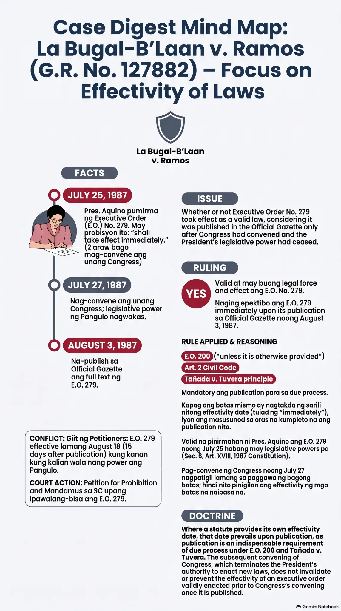
Use click/tap to enlarge, or right-click/long-press the poster to save it.
La Bugal-B’laan v. Ramos — Effectivity of laws and executive orders
Poster filename: LA BUGAL-BLAAN V. RAMOS.png
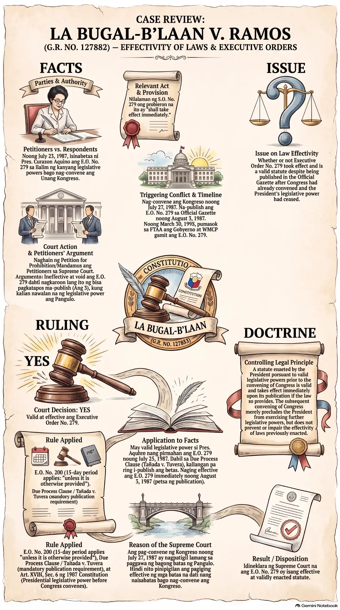
Use click/tap to enlarge, or right-click/long-press the poster to save it.
Tañada v. Tuvera — Publication and effectivity of laws
Poster filename: Tañada v. Tuvera.png
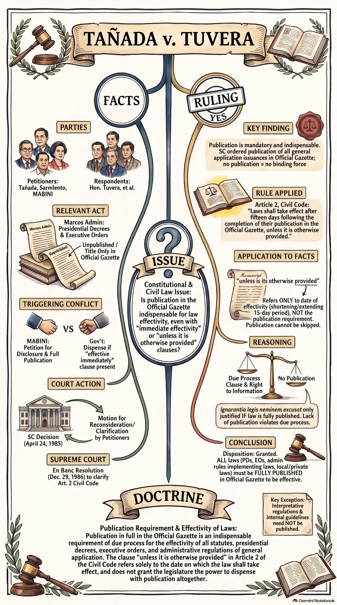
Use click/tap to enlarge, or right-click/long-press the poster to save it.
Cojuangco v. Republic — Publication of a decree incorporating an agreement
Poster filename: Cojuangco v Republic.png
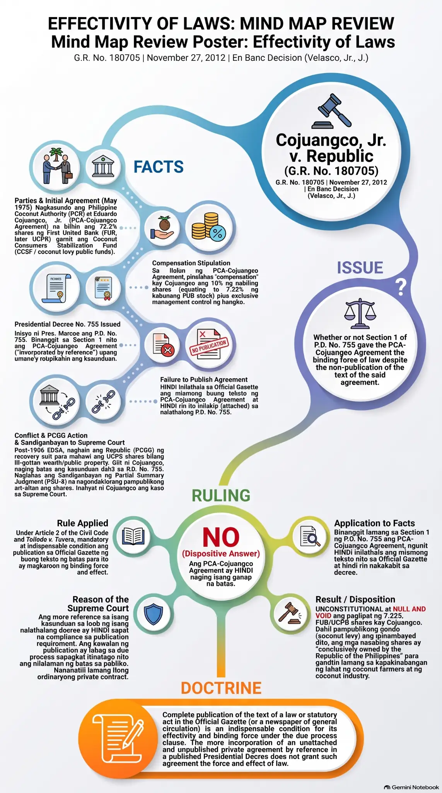
Use click/tap to enlarge, or right-click/long-press the poster to save it.
MPSTA v. Garcia — Publication of administrative issuances affecting rights
Poster filename: MPSTA v Garcia.png
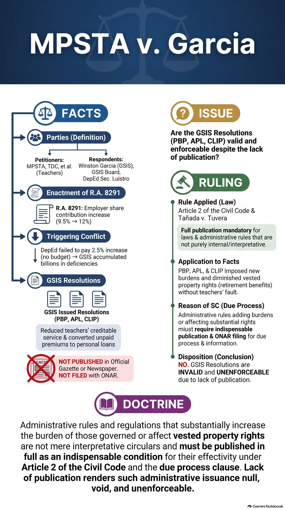
Use click/tap to enlarge, or right-click/long-press the poster to save it.
NPC v. Pinatubo Commercial — Internal circulars and publication
Poster filename: NPC v Pinatubo.png
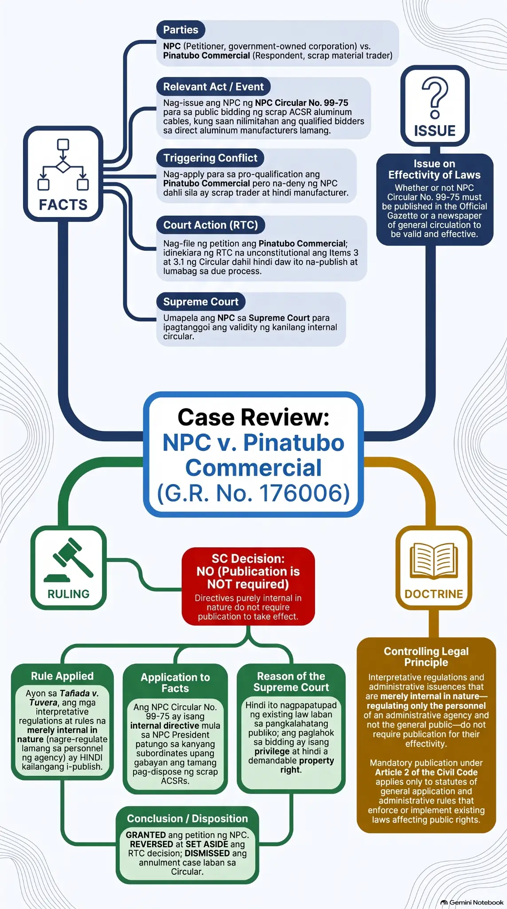
Use click/tap to enlarge, or right-click/long-press the poster to save it.
Effect and Application of Laws
Civil Code - Article 3
Simple explanation
Hindi defense ang hindi mo alam ang batas. Once effective, everyone is bound.
LEGAL MAXIM Ignorantia legis neminem excusat
Ignorantia legis neminem excusat
Doctrine / why it matters: Ignorance of the law excuses no one. Once a law has been validly published and has taken effect, a person generally cannot avoid compliance by claiming that the law was unknown to them.
ILLUSTRATION — HYPOTHETICAL
Facts: A driver violates a newly effective traffic law and says he never heard of it.
Application: The law was validly published and had already taken effect.
Result: His ignorance is not a defense.
Effect and Application of Laws
Civil Code - Article 4
Simple explanation
Prospective ang default. Retroactivity requires a contrary provision and remains subject to constitutional limits.
LEGAL MAXIM Lex prospicit, non respicit
Lex prospicit, non respicit
Doctrine / why it matters: The law looks forward, not backward. Prospectivity is the rule; retroactivity is the exception and still yields to constitutional protections such as the ban on ex post facto laws and impairment of vested rights.
ILLUSTRATION — HYPOTHETICAL
Facts: A statute enacted in July attempts to govern a transaction completed in January, but contains no retroactivity clause.
Application: Prospectivity is the default rule.
Result: The January transaction remains governed by the law then in force.
New case review posters (1)
Key point: Valeroso concerns the retroactive application of a later, more favorable penal law. Keep that statutory exception distinct from the Civil Code’s general rule against retroactivity.
Valeroso v. People — Retroactivity of a favorable penal law
Poster filename: Valeroso v. People.png
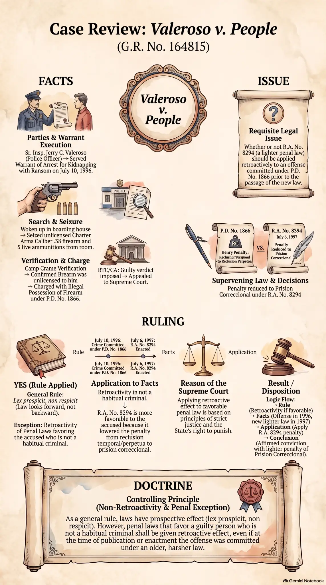
Use click/tap to enlarge, or right-click/long-press the poster to save it.
Effect and Application of Laws
Civil Code - Article 5
Simple explanation
An act violating a mandatory or prohibitory law is generally void unless the law itself saves it.
EXAM DISTINCTION Mandatory/prohibitory law versus directory law
Mandatory/prohibitory law versus directory law
Doctrine / why it matters: A forbidden act is generally void only when the violated rule is mandatory or prohibitory. Always check whether the statute itself recognizes validity or supplies a different consequence.
ILLUSTRATION — HYPOTHETICAL
Facts: A contractor promises a government employee money in exchange for an illegal permit.
Application: The agreement violates mandatory and prohibitory law.
Result: The illegal agreement is void and cannot be enforced.
Effect and Application of Laws
Civil Code - Article 6
Simple explanation
Rights may generally be waived, but not when the waiver harms law, public interests, morals, good customs, or a legally protected third person.
EXAM CHECKLIST A waiver is not automatically valid
A waiver is not automatically valid
Doctrine / why it matters: Test the waiver against six limits: law, public order, public policy, morals, good customs, and prejudice to a third person whose right is recognized by law.
ILLUSTRATION — HYPOTHETICAL
Facts: An employee signs a waiver accepting wages below the statutory minimum.
Application: Waiver is not allowed when it is contrary to law or public policy.
Result: The waiver is invalid despite the employee’s signature.
New case review posters (2)
Key point: Article 6 permits waiver unless the waiver conflicts with law, public order, public policy, morals, good customs, or a protected third-party right. The posters discuss the validity and clarity of particular waivers.
Mabugay-Otamias v. Republic — Waiver of rights
Poster filename: Otamias v. Republic.png
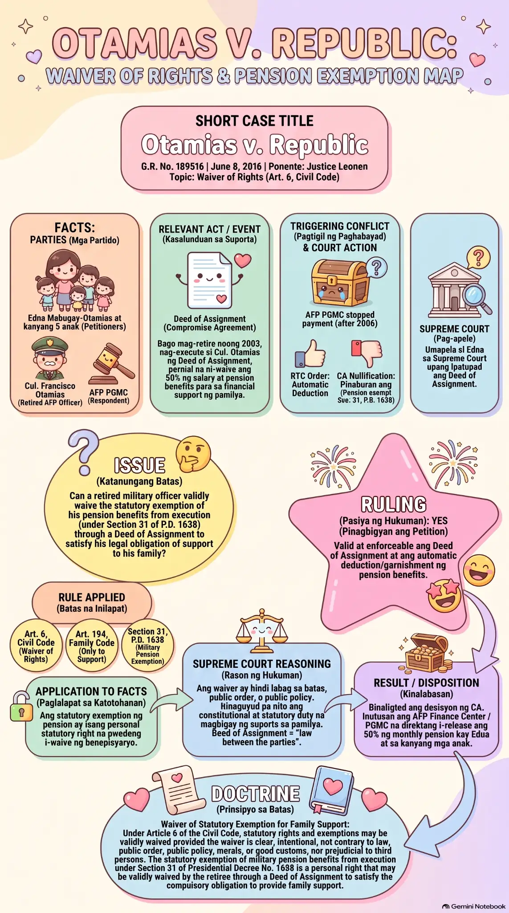
Use click/tap to enlarge, or right-click/long-press the poster to save it.
Sanico v. Colipano — Validity of a waiver against a common carrier
Poster filename: Sanico v Colipano.png
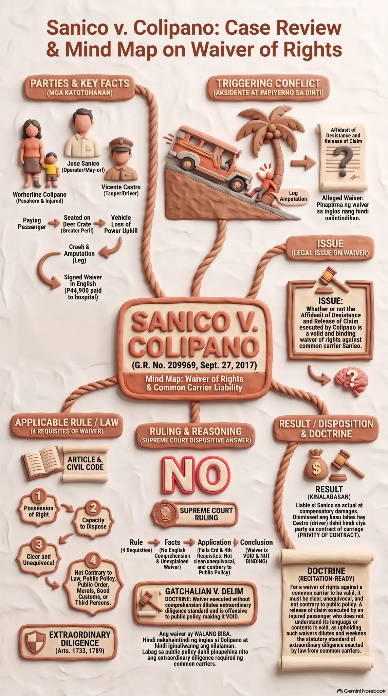
Use click/tap to enlarge, or right-click/long-press the poster to save it.
Effect and Application of Laws
Civil Code - Article 7
Simple explanation
A law is not erased by disuse. Only a later law repeals it; unconstitutional laws yield to the Constitution; regulations must stay within law.
LEGAL MAXIM Lex posterior derogat priori
Lex posterior derogat priori
Doctrine / why it matters: A later law prevails over an inconsistent earlier law. Repeals by implication are disfavored, and custom or long nonuse cannot repeal a statute.
ILLUSTRATION — HYPOTHETICAL
Facts: A town has ignored a national statute for many years and claims that local practice repealed it.
Application: Disuse or contrary custom does not repeal legislation; repeal requires a subsequent law.
Result: The statute remains binding.
Effect and Application of Laws
Civil Code - Article 8
Simple explanation
Supreme Court interpretations applying law or Constitution belong to the Philippine legal system.
LEGAL MAXIM Stare decisis et non quieta movere
Stare decisis et non quieta movere
Doctrine / why it matters: Follow settled precedents and do not disturb what has been resolved without a compelling reason. Judicial decisions interpret the law; they do not ordinarily create a new statute.
ILLUSTRATION — HYPOTHETICAL
Facts: The Supreme Court has already interpreted an ambiguous statute, but a trial court prefers its own contrary reading.
Application: Controlling judicial interpretation forms part of the legal system.
Result: The trial court must apply the controlling doctrine unless it is overturned.
New case review posters (3)
Supplemental jurisprudence: the operative-fact doctrine and the retroactive effect of judicial interpretations are related doctrines; the posters illustrate them and are not text of Article 8.
SMC v. CIR — Retroactive application of judicial decisions
Poster filename: SMC V. CIR.png
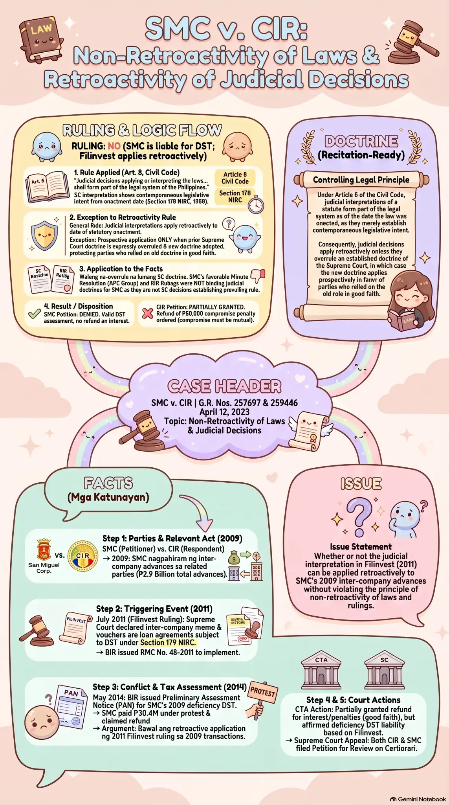
Use click/tap to enlarge, or right-click/long-press the poster to save it.
Castañeda v. COA — Doctrine of operative fact
Poster filename: Castañeda v. COA.png
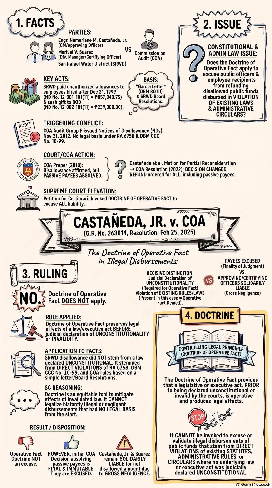
Use click/tap to enlarge, or right-click/long-press the poster to save it.
Film Development Council v. Colon — Doctrine of operative fact
Poster filename: Film Devt. Council v. Colon.png
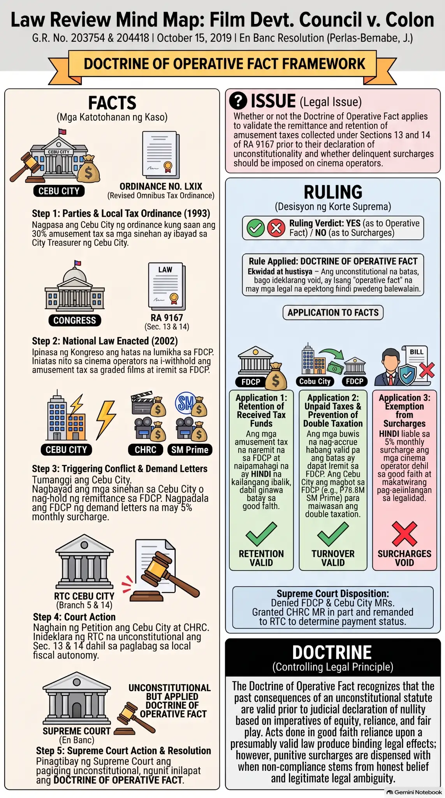
Use click/tap to enlarge, or right-click/long-press the poster to save it.
Effect and Application of Laws
Civil Code - Article 9
Simple explanation
A court cannot refuse to decide merely because the law is silent, obscure, or insufficient.
JUDICIAL DUTY Silence is not permission to refuse judgment
Silence is not permission to refuse judgment
Doctrine / why it matters: A court must decide even when legislation is silent, obscure, or insufficient. Article 10 then directs the court to presume that the lawmaking body intended right and justice to prevail.
ILLUSTRATION — HYPOTHETICAL
Facts: A new technology creates a civil dispute not expressly anticipated by any statute.
Application: A court cannot refuse judgment merely because the law is silent or insufficient.
Result: It must decide using applicable principles, analogy, custom, and justice within legal limits.
Effect and Application of Laws
Civil Code - Article 10
Simple explanation
When interpretation is doubtful, presume the legislature intended justice and right to prevail.
INTERPRETIVE GUIDE Equity follows the law
Equity follows the law
Doctrine / why it matters: Right and justice guide interpretation, but equity cannot defeat a clear statutory command. Use Article 10 to resolve doubt—not to rewrite an unambiguous rule.
ILLUSTRATION — HYPOTHETICAL
Facts: Two plausible readings of a civil statute exist; one causes an arbitrary forfeiture while the other preserves both parties’ lawful rights.
Application: In case of doubt, interpretation should presume that right and justice were intended.
Result: The court should adopt the legally supportable, just construction.
Effect and Application of Laws
Civil Code - Article 11
Simple explanation
A custom contrary to law, public order, or public policy is rejected.
MEMORY SKELETON Article-specific recall map
One-clause article. Opening cue: “Customs which are contrary to law, public …” Closing cue: “… or public policy shall not be countenanced.”
Use the opening cue to start cleanly and the closing cue to catch omitted qualifiers during verbatim recall.
ILLUSTRATION — HYPOTHETICAL
Facts: A community claims a custom that daughters may never inherit property.
Application: A custom contrary to law and public policy cannot prevail.
Result: The discriminatory custom is rejected.
New case review posters (1)
Key point: Article 11 rejects customs contrary to law, public order, or public policy. Anaban examines whether an Ibaloi customary divorce could dissolve a marriage under Philippine law.
Anaban v. Anaban-Alfiler — Customary law and tribal divorce
Poster filename: Anaban v. Anaban-Alfiler.png
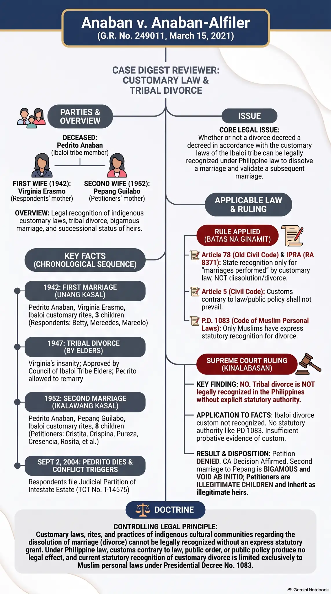
Use click/tap to enlarge, or right-click/long-press the poster to save it.
Effect and Application of Laws
Civil Code - Article 12
Simple explanation
Custom is a factual matter and must be proven with evidence.
MEMORY SKELETON Article-specific recall map
One-clause article. Opening cue: “A custom must be proved as a …” Closing cue: “… fact, according to the rules of evidence.”
Use the opening cue to start cleanly and the closing cue to catch omitted qualifiers during verbatim recall.
ILLUSTRATION — HYPOTHETICAL
Facts: A trader relies on an alleged local business custom but presents no witness, record, or other proof.
Application: Custom is a factual matter that must be proved.
Result: The court cannot apply the unproven custom.
Effect and Application of Laws
Civil Code - Article 13
Simple explanation
This supplies the Civil Code method for statutory periods. Remember: exclude the first day, include the last.
EXAM TRAP Count the first day out, the last day in
Count the first day out, the last day in
Doctrine / why it matters: For a period stated in days, exclude the first day and include the last. Also distinguish the Civil Code’s original definitions from later special rules that may govern a particular statute or procedural period.
ILLUSTRATION — HYPOTHETICAL
Facts: A ten-day period begins from receipt of notice on January 1.
Application: Exclude January 1 and count January 2 as day one; include the last day, subject to any special governing rule.
Result: The tenth day is January 11.
New case review posters (1)
Period-computation note: CIR v. Primetown applied Section 31, Chapter VIII, Book I of the Administrative Code of 1987 as the later rule for computing the period at issue. Apply the governing statute to the particular deadline.
CIR v. Primetown — Computation of legal periods
Poster filename: CIR v. Primetown.png
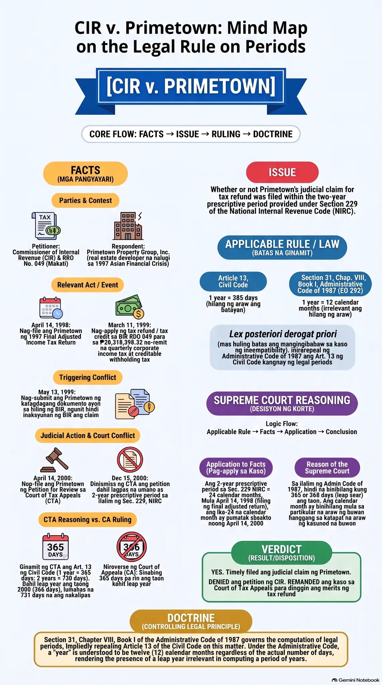
Use click/tap to enlarge, or right-click/long-press the poster to save it.
Effect and Application of Laws
Civil Code - Article 14
Simple explanation
Penal and public-security laws generally bind everyone who lives or stays in Philippine territory, subject to international law and treaties.
CONFLICTS PRINCIPLE Territoriality and generality
Territoriality and generality
Doctrine / why it matters: Penal laws and laws of public security and safety bind everyone within Philippine territory, subject to public international law and treaty stipulations.
ILLUSTRATION — HYPOTHETICAL
Facts: A foreign tourist commits a penal offense while staying in Manila.
Application: Penal and public-security laws generally bind everyone within Philippine territory.
Result: Philippine law applies, absent a treaty or international-law exception.
New case review posters (1)
Key point: Del Socorro concerns Philippine criminal law applied to acts and obligations within Philippine territory, including an alien father’s failure to support a minor child residing here.
Del Socorro v. Van Wilsem — Territoriality and support obligations
Poster filename: Del Socorro v. Van Wilsem.png
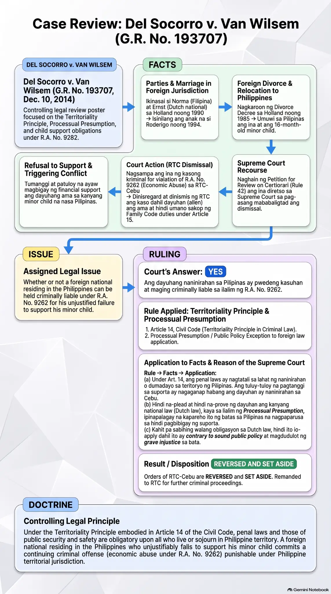
Use click/tap to enlarge, or right-click/long-press the poster to save it.
Effect and Application of Laws
Civil Code - Article 15
Simple explanation
Nationality principle: Filipino citizens remain bound by Philippine rules on family rights, status, condition, and legal capacity even abroad.
CONFLICTS PRINCIPLE Nationality principle
Nationality principle
Doctrine / why it matters: Philippine laws on family rights and duties, status, condition, and legal capacity follow Filipino citizens even when they live abroad.
ILLUSTRATION — HYPOTHETICAL
Facts: A Filipino citizen living abroad argues that foreign residence alone changed his family status and legal capacity under Philippine law.
Application: The nationality principle follows Filipino citizens in matters of status, condition, capacity, and family rights and duties.
Result: Philippine personal law generally continues to govern him.
Uploaded case photos · 4 visual case notes
Open a case to study its uploaded visual summary. Article labels are doctrinal cross-references; some decisions apply more than one Civil Code or Family Code provision.
Doctrine cue: A Filipino spouse remains subject to Philippine personal law; the foreign spouse’s valid divorce and capacity to remarry are considered under the applicable foreign law and Art. 26.
Doctrine cue: Nationality principle and recognition of a foreign divorce; read together with the Family Code rule on a divorce obtained abroad by the alien spouse.
Doctrine cue: Nationality and proof of foreign law matter when the spouses are foreign nationals and the requested marriage relief depends on their national law.
Doctrine cue: The Supreme Court applied the nationality principle to the Filipino spouse while separately considering the foreign place-of-celebration rule for marriage.
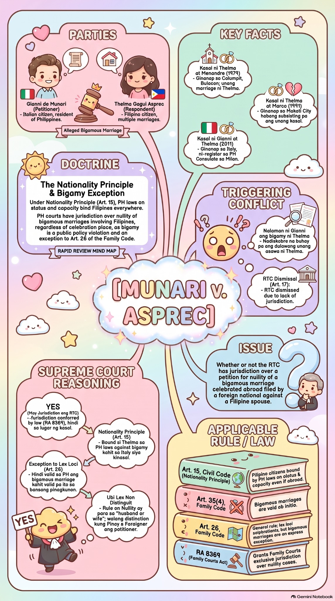
Nationality Principle · YouTube review videos (5)
If you publish this reviewer on an HTTPS site, the players can play here. If you open a downloaded copy directly and see Error 153, extract the ZIP and use Start_PFR_Reviewer.command on Mac. Direct YouTube links are also available below each player.
Van Dorn v. Romillo, Jr., G.R. No. L-68470, Oct. 8, 1985
Doctrine / why it matters: The national law of the decedent governs intrinsic testamentary provisions and succession, regardless of the nature or location of the property.
ILLUSTRATION — ACTUAL CASE
Facts: A Texas citizen died leaving property in the Philippines and a will inconsistent with Philippine legitime rules.
Application: Bellis v. Bellis applied the decedent’s national law to intrinsic succession matters.
Result: Texas law—not Philippine compulsory-heirship rules—governed those intrinsic provisions.
Uploaded case photos · 3 visual case notes
Open a case to study its uploaded visual summary. Article labels are doctrinal cross-references; some decisions apply more than one Civil Code or Family Code provision.
Doctrine cue: The alien decedent’s national law may be pleaded and proved; absent proof, Philippine law applies by default. The image focuses on an alien’s will and its extrinsic validity.
Doctrine cue: Renvoi: California’s conflict rule referred the succession question back to the law of the decedent’s Philippine domicile, so Philippine law governed the intrinsic validity of the will.
Doctrine cue: The decedent’s foreign citizenship affected the applicable rules on divorce and succession; foreign law had to be properly pleaded and proved.
Doctrine of Renvoi · case videos (2)
Play the related case video here, or open it directly on YouTube.
In re: Testate Estate of Christensen v. Garcia, G.R. No. L-16749, Jan. 31, 1963
Key point: Yao-Kee concerns proof of foreign law and custom in determining marital and successional status. Foreign law and custom must be established as facts under the applicable evidence rules.
Yao-Kee v. Sy-Gonzales — Proof of foreign law, custom, and succession
Poster filename: Yao-Kee v. Sy-Gonzales.png
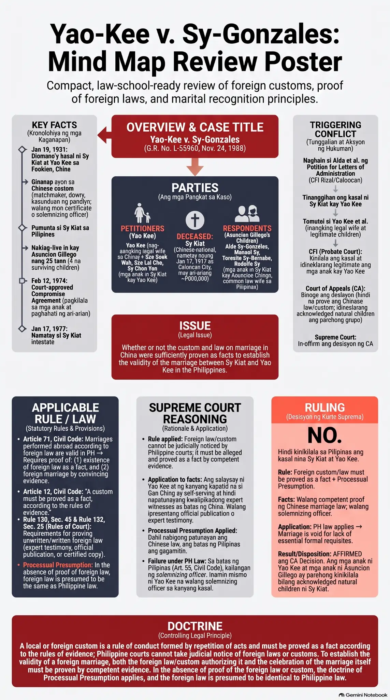
Use click/tap to enlarge, or right-click/long-press the poster to save it.
Effect and Application of Laws
Civil Code - Article 17
Simple explanation
Lex loci celebrationis generally governs form and solemnities; Philippine consular acts use Philippine formalities; prohibitive laws cannot be evaded abroad.
CONFLICTS PRINCIPLE Lex loci celebrationis—with public-policy limits
Lex loci celebrationis—with public-policy limits
Doctrine / why it matters: Forms and solemnities generally follow the law of the place where an act is executed. Foreign law cannot be used to evade Philippine prohibitive rules concerning persons, acts, property, public order, public policy, or good customs.
ILLUSTRATION — HYPOTHETICAL
Facts: Two persons execute a contract abroad using the formalities valid in that country, but its object violates a Philippine prohibitive law meant to bind Filipinos everywhere.
Application: Foreign formal validity cannot defeat Philippine prohibitive law, public order, or public policy.
Result: The parties cannot validate the prohibited arrangement merely by going abroad.
Uploaded case photo · 1 choice-of-law visual note
Open a case to study its uploaded visual summary. Article labels are doctrinal cross-references; some decisions apply more than one Civil Code or Family Code provision.
SCB v. PI Two (title as shown in the uploaded illustration)
Doctrine cue: The illustration analyzes the governing law for a principal loan and related pledge/guarantee, applying the law of the principal contract to extinguishment of the principal obligation.
Effect and Application of Laws
Civil Code - Article 18
Simple explanation
The Civil Code fills gaps in matters primarily governed by the Code of Commerce or special laws.
MEMORY SKELETON Article-specific recall map
One-clause article. Opening cue: “In matters which are governed by the …” Closing cue: “… supplied by the provisions of this Code.”
Use the opening cue to start cleanly and the closing cue to catch omitted qualifiers during verbatim recall.
ILLUSTRATION — HYPOTHETICAL
Facts: A commercial transaction is governed by a special statute, but that statute is silent on a subsidiary civil issue.
Application: The special or commercial law controls first; the Civil Code supplies the gap when appropriate.
Result: The Civil Code applies suppletorily, not in contradiction to the special law.
Human Relations
Civil Code - Article 19
Simple explanation
Abuse-of-rights standard: exercise rights and duties with justice, give everyone his due, and act honestly and in good faith.
Doctrine / why it matters: Abuse of rights requires: a legal right or duty, its exercise in bad faith, and the sole intent to prejudice or injure another. Article 19 is a standard of conduct, usually enforced through Articles 20 or 21.
ILLUSTRATION — ACTUAL CASE
Facts: A hotel employee asked an uninvited guest to leave a private birthday party; the guest claimed the manner was humiliating.
Application: Nikko Hotel examined whether the right was exercised in bad faith and solely to injure.
Result: A lawful right does not become abuse without the required bad faith and injurious purpose.
Uploaded case photos · 11 visual case notes
Open a case to study its uploaded visual summary. Article labels are doctrinal cross-references; some decisions apply more than one Civil Code or Family Code provision.
Doctrine cue: The illustration places the case under damnum absque injuria: damage alone does not create liability without a legally wrongful act or violation of a protected right.
Doctrine cue: The illustration connects the claim for damages to the need to prove a wrongful act, legal injury, and the basis for the particular damages awarded.
Doctrine cue: A school’s conduct in handling a student’s academic status may breach duties of fair dealing and support liability when the statutory elements and damage are proved.
Doctrine cue: The exercise of a legal right must still comply with justice, honesty, and good faith; wrongful conduct may support damages under the applicable provisions.
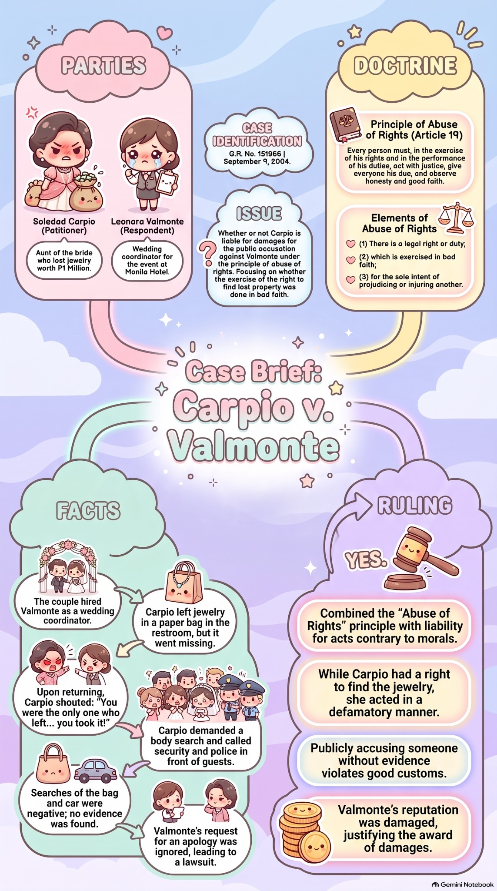
St. Martin Polyclinic, Inc. v. L & P Construction Corp.
Doctrine cue: The illustration discusses liability and damages in the context of human-relations principles; identify the specific wrongful conduct and damage rather than relying on the label alone.
Doctrine cue: The case illustration belongs with the human-relations provisions governing good faith, unlawful injury, and willful conduct contrary to morals or public policy.
Doctrine cue: The dispute illustrates that contractual rights and performance are assessed under good-faith standards; damages require a legal basis and proof.
Doctrine cue: Abuse of rights requires a legal right or duty, exercise in bad faith, and the sole intent to prejudice or injure another. A lawful act is not automatically abusive.
Doctrine cue: Use the image as a case prompt for the human-relations provisions: identify the right or duty, the alleged bad faith or unlawful act, and the resulting injury.
Doctrine cue: The illustration is grouped under abuse of rights and damages. Test the elements of Art. 19 and identify whether Arts. 20 or 21 supplies the damages action.
Doctrine cue: The case illustrates that rights and obligations must be exercised in good faith; liability depends on the proven legal wrong and the applicable damages provision.
Damnum Absque Injuria · case videos (2)
Play the related case video here, or open it directly on YouTube.
City of Bacolod v. Phuture Visions, G.R. No. 190289, Jan. 17, 2018
A person who unlawfully causes damage through willful or negligent conduct must indemnify the injured party.
EXAM DISTINCTION Article 20: contrary to law
Article 20: contrary to law
Doctrine / why it matters: The injury-producing act is contrary to law and is done willfully or negligently. Compare Article 21, where the act may not violate a specific statute but is willfully contrary to morals, good customs, or public policy.
ILLUSTRATION — HYPOTHETICAL
Facts: A contractor negligently drops materials onto a neighbor’s car in violation of safety rules.
Application: The unlawful negligent act directly causes damage.
Result: The contractor must indemnify the car owner.
Acts Contrary to Law · case videos (2)
Play the related case video here, or open it directly on YouTube.
Garcia v. Salvador, G.R. No. 168512, March 20, 2007
Doctrine / why it matters: Mere breach of promise to marry is not by itself actionable, but a willful, humiliating abandonment after wedding preparations may offend morals and good customs and support damages under Article 21.
ILLUSTRATION — ACTUAL CASE
Facts: A groom abandoned the bride shortly before the wedding after extensive preparations and public invitations.
Application: Wassmer v. Velez treated the humiliating, willful conduct—not the bare broken promise—as contrary to morals and good customs.
Result: Damages could be recovered under Article 21.
Uploaded case visuals · 4 case maps
MERALCO v. Court of Appeals, G.R. No. L-39019, January 22, 1988
Related article: Acts Contrary to Law / Human Relations
Study cue: Recall the facts and ruling shown in the supplied case map; connect it to the Article 21 discussion where the case was assigned.
Wassmer v. Velez, G.R. No. L-20089, December 26, 1964
Related article: Article 21 · Acts Contrary to Good Customs
Study cue: A bare breach of promise to marry is not actionable; the willful abandonment after extensive wedding preparations was treated as contrary to morals and good customs.
Baksh v. Court of Appeals, G.R. No. 97336, February 19, 1993
Related article: Article 21 · Acts Contrary to Good Customs
Study cue: The Court addressed a willful, deceitful promise to marry and resulting injury; use the map to recall the factual application of Article 21.
Case videos illustrating Article 21. A bare breach of promise to marry is generally not actionable; liability depends on the wrongful circumstances recognized by the Court.
Unjust enrichment: no one should retain a benefit obtained at another’s expense without a just or legal ground.
LEGAL MAXIM Nemo cum alterius detrimento locupletari potest
Nemo cum alterius detrimento locupletari potest
Doctrine / why it matters: No one should enrich himself at another’s expense. Unjust enrichment requires a benefit obtained without just or legal ground and a corresponding loss or prejudice to another.
ILLUSTRATION — HYPOTHETICAL
Facts: A bank mistakenly credits ₱100,000 to Ana’s account, and Ana knows the money is not hers.
Application: She received a benefit without a just or legal ground at the bank’s expense.
Result: She must return the amount; keeping it would be unjust enrichment.
Uploaded case visuals · 2 case maps
University of the Philippines v. Philab Industries, Inc.
Related article: Article 22 · Unjust Enrichment
Study cue: The visual illustrates accion in rem verso and the rule that unjust enrichment is an auxiliary remedy, generally unavailable when another adequate remedy exists.
Guevarra v. Banach, G.R. No. 214016, November 24, 2021
Related article: Article 22 · Unjust Enrichment
Study cue: The Court rejected recovery of the money as unjust enrichment on these facts: it had been given as a gift, and the claimant acted in bad faith through deception.
Unjust Enrichment / Accion in Rem Verso · case videos (2)
Case videos illustrating Article 22. Accion in rem verso is an auxiliary remedy; unjust enrichment requires a benefit without just or legal ground at another’s expense.
University of the Philippines v. Philab Industries, Inc., G.R. No. 152411, Sept. 29, 2004
Even without the defendant’s fault, equity may require indemnity when the defendant benefited from the damaging act or event.
MEMORY SKELETON Article-specific recall map
One-clause article. Opening cue: “Even when an act or event causing …” Closing cue: “… the act or event he was benefited.”
Use the opening cue to start cleanly and the closing cue to catch omitted qualifiers during verbatim recall.
ILLUSTRATION — HYPOTHETICAL
Facts: To stop a spreading fire, responders destroy Ben’s fence, which saves Carlo’s neighboring warehouse; Carlo was not at fault.
Application: Carlo benefited from the damaging event even without fault.
Result: Equity may require Carlo to contribute indemnity to the extent of the benefit.
Human Relations
Civil Code - Article 24
Simple explanation
Courts must actively protect a party disadvantaged by dependence, ignorance, poverty, mental weakness, tender age, or another handicap.
PROTECTIVE RULE Courts must protect the disadvantaged party
Courts must protect the disadvantaged party
Doctrine / why it matters: The provision is triggered by a handicap such as dependence, ignorance, indigence, mental weakness, tender age, or another disadvantage—not merely by an unfavorable bargain.
ILLUSTRATION — HYPOTHETICAL
Facts: An illiterate elderly owner signs a complex deed prepared by a sophisticated buyer for a grossly inadequate price.
Application: The owner’s ignorance and dependence place her at a disadvantage.
Result: The court must scrutinize the transaction vigilantly rather than presume equal bargaining power.
Human Relations
Civil Code - Article 25
Simple explanation
During acute public want or emergency, courts may stop thoughtless luxury spending at the instance of a proper charitable institution.
MEMORY SKELETON Article-specific recall map
One-clause article. Opening cue: “Thoughtless extravagance in expenses for pleasure or …” Closing cue: “… of any government or private charitable institution.”
Use the opening cue to start cleanly and the closing cue to catch omitted qualifiers during verbatim recall.
ILLUSTRATION — HYPOTHETICAL
Facts: During a severe public famine, a person plans an extravagant event that wastes scarce food while a qualified charity seeks judicial restraint.
Application: Article 25 allows intervention against thoughtless extravagance during acute public want or emergency.
Result: A court may enjoin the waste upon a proper petition.
Human Relations
Civil Code - Article 26
Simple explanation
The law protects dignity, personality, privacy, family life, reputation, and peace of mind even when the conduct is not independently criminal.
Doctrine / why it matters: Privacy is a fundamental right protected against unwarranted governmental intrusion. Article 26 separately supplies civil protection for dignity, personality, family relations, and private life.
ILLUSTRATION — ACTUAL CASE
Facts: A government order created a nationwide computerized identification system without an adequate legislative framework and safeguards.
Application: Ople v. Torres emphasized privacy as a fundamental right; Article 26 also protects private life and dignity through a civil action.
Result: Unwarranted intrusion may be restrained and may create civil liability.
Human Relations
Civil Code - Article 27
Simple explanation
A public servant who unjustifiably refuses or neglects a legal duty may be liable for damages to the injured person.
MEMORY SKELETON Article-specific recall map
One-clause article. Opening cue: “Any person suffering material or moral loss …” Closing cue: “… disciplinary administrative action that may be taken.”
Use the opening cue to start cleanly and the closing cue to catch omitted qualifiers during verbatim recall.
ILLUSTRATION — HYPOTHETICAL
Facts: A licensing officer refuses for personal reasons to act on a complete application despite a clear legal duty, causing the applicant financial loss.
Application: The refusal is unjustified and the duty is ministerial under law.
Result: The officer may be personally liable for the resulting damages.
Human Relations
Civil Code - Article 28
Simple explanation
Unfair competition through force, intimidation, deceit, machination, or oppressive conduct creates a civil action.
MEMORY SKELETON Article-specific recall map
One-clause article. Opening cue: “Unfair competition in agricultural, commercial or industrial …” Closing cue: “… by the person who thereby suffers damage.”
Use the opening cue to start cleanly and the closing cue to catch omitted qualifiers during verbatim recall.
ILLUSTRATION — HYPOTHETICAL
Facts: A dominant distributor threatens retailers and spreads fabricated claims to drive a smaller competitor out of business.
Application: The competitive conduct uses intimidation and deceit rather than legitimate efficiency.
Result: The injured competitor has a civil action for unfair competition.
Human Relations
Civil Code - Article 29
Simple explanation
Acquittal because guilt was not proven beyond reasonable doubt does not always bar a civil action, which uses preponderance of evidence.
EVIDENCE DISTINCTION Acquittal on reasonable doubt can still permit civil liability
Acquittal on reasonable doubt can still permit civil liability
Doctrine / why it matters: Criminal guilt requires proof beyond reasonable doubt; the independent civil action under Article 29 needs only preponderance of evidence. An acquittal declaring that the act or omission did not exist is different.
ILLUSTRATION — HYPOTHETICAL
Facts: An accused is acquitted because guilt was not proved beyond reasonable doubt, but the victim has stronger evidence on the balance of probabilities.
Application: The standards of proof differ, and the acquittal did not declare that the act never occurred.
Result: A separate civil action may still succeed by preponderance of evidence.
Human Relations
Civil Code - Article 30
Simple explanation
When a separate civil action is allowed but no criminal case is filed, the civil claim still uses preponderance of evidence.
MEMORY SKELETON Article-specific recall map
One-clause article. Opening cue: “When a separate civil action is brought …” Closing cue: “… sufficient to prove the act complained of.”
Use the opening cue to start cleanly and the closing cue to catch omitted qualifiers during verbatim recall.
ILLUSTRATION — HYPOTHETICAL
Facts: No criminal prosecution is filed, but the law allows the injured party to pursue the corresponding civil claim separately.
Application: Absence of a criminal case does not raise the civil burden to proof beyond reasonable doubt.
Result: The claimant proves the case by preponderance of evidence.
Human Relations
Civil Code - Article 31
Simple explanation
A civil action based on a separate legal source may proceed independently of the criminal prosecution.
CAUSE-OF-ACTION RULE A separate source of civil obligation may proceed independently
A separate source of civil obligation may proceed independently
Doctrine / why it matters: When the civil action rests on an obligation not arising from the felony itself, it may proceed regardless of the criminal case, subject to procedural rules against double recovery.
ILLUSTRATION — HYPOTHETICAL
Facts: A buyer’s conduct is investigated as fraud, while the seller sues on an independently existing contractual obligation.
Application: The civil action rests on contract, not solely on the alleged felony.
Result: It may proceed independently, subject to procedural rules and the ban on double recovery.
Human Relations
Civil Code - Article 32
Simple explanation
A public officer or private person who directly or indirectly violates the enumerated constitutional rights may be personally liable for damages.
Doctrine / why it matters: A direct civil action lies for violations of the constitutional rights listed in Article 32. Liability may attach even without a prior criminal conviction; the article expressly limits the good-faith defense for judges.
ILLUSTRATION — ACTUAL CASE
Facts: Military personnel conducted raids and allegedly violated citizens’ constitutional rights.
Application: Aberca v. Ver recognized a direct Article 32 action against persons who directly or indirectly obstruct the listed rights.
Result: Civil liability may exist even without a prior criminal conviction.
Human Relations
Civil Code - Article 33
Simple explanation
Civil actions for defamation, fraud, and physical injuries may proceed independently and require only preponderance of evidence.
EXAM DISTINCTION Independent civil actions
Independent civil actions
Doctrine / why it matters: For defamation, fraud, and physical injuries, the civil action is independent of the criminal prosecution and uses preponderance of evidence. Avoid double recovery for the same act or omission.
ILLUSTRATION — HYPOTHETICAL
Facts: An investor files an independent civil action for fraud while the related criminal prosecution is pending.
Application: Fraud is one of the causes expressly covered by Article 33.
Result: The civil action may proceed separately on preponderance of evidence, without double recovery.
Case review posters (2)
Open a case below to view its poster and quick-review material.
Lim v. Kuo Co Ping
Related provision: Article 33 — independent civil action.
If local police refuse or fail to protect a person in danger, the responsible city or municipality may be civilly liable; the civil action is independent.
MEMORY SKELETON Article-specific recall map
One-clause article. Opening cue: “When a member of a city or …” Closing cue: “… evidence shall suffice to support such action.”
Use the opening cue to start cleanly and the closing cue to catch omitted qualifiers during verbatim recall.
ILLUSTRATION — HYPOTHETICAL
Facts: A person facing an immediate violent attack asks local police for help, but officers unjustifiably refuse to act.
Application: Article 34 imposes primary liability on the responsible officer and subsidiary liability on the city or municipality.
Result: The victim may bring the independent civil action.
Human Relations
Civil Code - Article 35
Simple explanation
If prosecutors do not institute a criminal case and no independent civil action is otherwise allowed, the injured person may sue under the safeguards stated here.
MEMORY SKELETON Article-specific recall map
2 checkable parts. Recite them in this order:
1. “When a person, claiming to be injured …”
2. “If during the pendency of the civil …”
Structure is part of verbatim mastery: do not merge, reorder, or skip a paragraph or numbered item.
ILLUSTRATION — HYPOTHETICAL
Facts: The prosecutor declines to file a criminal charge, and the injury is not among the independent actions expressly provided elsewhere.
Application: Article 35 permits a civil action under its safeguards, including possible bond and suspension if a criminal case is later filed.
Result: The victim is not automatically left without a remedy.
Human Relations
Civil Code - Article 36
Simple explanation
A prejudicial question is resolved under the Rules of Court because its civil issue must first be settled before the criminal case can proceed.
PROCEDURAL CONCEPT Prejudicial question
Prejudicial question
Doctrine / why it matters: The civil issue must be previously instituted and so intimately connected with the criminal case that its resolution determines whether the criminal action may proceed.
ILLUSTRATION — HYPOTHETICAL
Facts: A pending civil case will determine whether a document created the legal obligation whose alleged fraudulent breach is the basis of a criminal charge.
Application: If that civil issue is determinative and meets the Rules of Court requisites, it is prejudicial.
Result: The criminal proceeding may be suspended until the civil issue is resolved.
Civil Personality - General Provisions
Civil Code - Article 37
Simple explanation
Juridical capacity is inherent and lost only at death; capacity to act is acquired and may be limited or lost.
CORE DISTINCTION Juridical capacity versus capacity to act
Juridical capacity versus capacity to act
Doctrine / why it matters: Juridical capacity is the fitness to be the subject of legal relations and is inherent in every natural person. Capacity to act is the power to perform acts with legal effect and may be restricted.
ILLUSTRATION — HYPOTHETICAL
Facts: A ten-year-old inherits land but signs a deed selling it without lawful representation.
Application: The child has juridical capacity to own property but lacks full capacity to perform the sale.
Result: Ownership may pass to the child, while the child’s deed is subject to the rules on incapacity.
Civil Personality - General Provisions
Civil Code - Article 38
Simple explanation
Listed disabilities restrict capacity to act but do not automatically erase obligations arising from one’s acts or property relations.
MEMORY SKELETON Article-specific recall map
One-clause article. Opening cue: “Minority, insanity or imbecility, the state of …” Closing cue: “… or from property relations, such as easements.”
Use the opening cue to start cleanly and the closing cue to catch omitted qualifiers during verbatim recall.
ILLUSTRATION — HYPOTHETICAL
Facts: A minor carelessly damages another person’s property and argues that minority erases every obligation.
Application: Minority restricts capacity to act but does not automatically extinguish obligations arising from acts or property relations.
Result: Liability must still be determined under the applicable substantive rules.
Civil Personality - General Provisions
Civil Code - Article 39
Simple explanation
Capacity to act may be modified by the listed conditions; religion and political opinion do not limit it, and majority does not cure every incapacity.
MEMORY SKELETON Article-specific recall map
2 checkable parts. Recite them in this order:
1. “The following circumstances, among others, modify or …”
2. “A married woman, twenty-one years of age …”
Structure is part of verbatim mastery: do not merge, reorder, or skip a paragraph or numbered item.
ILLUSTRATION — HYPOTHETICAL
Facts: An eighteen-year-old assumes that majority automatically removes every legal restriction, including special requirements for marriage or guardianship.
Application: Majority grants general capacity but does not override specific statutory incapacities or restrictions.
Result: The special rule must still be satisfied.
Case review posters (1)
Open a case below to view its poster and quick-review material.
Matthews v. Taylor
Related provision: Article 39 — capacity to act and marital property.
Birth generally determines personality, but a conceived child is treated as born whenever favorable, subject to Article 41.
LEGAL MAXIM Nasciturus pro iam nato habetur, quotiens de commodis eius agitur
Nasciturus pro iam nato habetur, quotiens de commodis eius agitur
Doctrine / why it matters: A conceived child is considered born for purposes favorable to it, provided it is later born under the conditions of Article 41.
ILLUSTRATION — HYPOTHETICAL
Facts: A testator leaves property to a child already conceived but not yet born when the testator dies.
Application: The conceived child is deemed born for a favorable consequence, subject to Article 41.
Result: If born under Article 41’s conditions, the child may inherit.
Case review posters (3)
Open a case below to view its poster and quick-review material.
Quimiquing v. Icao
Related provision: Article 40 — conceived child and favorable effects.
In uncertain simultaneous-death situations, the party alleging priority of death must prove it; otherwise no rights pass between the persons.
EVIDENCE RULE No automatic survivorship presumption between possible heirs
No automatic survivorship presumption between possible heirs
Doctrine / why it matters: The person alleging that one died before the other must prove it. If the order of death remains doubtful, the law presumes simultaneous death for succession and no transmission of rights from one to the other.
ILLUSTRATION — HYPOTHETICAL
Facts: A mother and son who may inherit from each other die in the same crash, and no reliable evidence shows who died first.
Application: The party alleging priority bears the burden; unresolved doubt produces the presumption of simultaneous death for succession.
Result: Neither transmits successional rights to the other.
Juridical Persons
Civil Code - Article 44
Simple explanation
This enumerates the juridical persons recognized by law.
ENTITY MAP Two classes of juridical persons
Two classes of juridical persons
Doctrine / why it matters: Memorize the division: public entities created by law, and private corporations/associations or institutions whose personality is separate from their members.
ILLUSTRATION — HYPOTHETICAL
Facts: A registered corporation buys land and enters a contract separate from its shareholders.
Application: It is a juridical person recognized by law with personality distinct from its members.
Result: The corporation—not each shareholder personally—is the contracting party.
Juridical Persons
Civil Code - Article 45
Simple explanation
Public juridical persons follow their creating laws; private corporations follow corporation law; partnerships follow the Civil Code.
MEMORY SKELETON Article-specific recall map
3 checkable parts. Recite them in this order:
1. “Juridical persons mentioned in Nos. 1 and …”
2. “Private corporations are regulated by laws of …”
3. “Partnerships and associations for private interest or …”
Structure is part of verbatim mastery: do not merge, reorder, or skip a paragraph or numbered item.
ILLUSTRATION — HYPOTHETICAL
Facts: A city agency, a stock corporation, and a partnership dispute which rules govern their organization.
Application: Each follows its creating charter or public law, corporation law, or the Civil Code rules on partnership, respectively.
Result: Their rights and internal powers are determined by the proper governing law.
Juridical Persons
Civil Code - Article 46
Simple explanation
Juridical persons may hold property, incur obligations, and sue or be sued within their governing laws.
MEMORY SKELETON Article-specific recall map
One-clause article. Opening cue: “Juridical persons may acquire and possess property …” Closing cue: “… the laws and regulations of their organization.”
Use the opening cue to start cleanly and the closing cue to catch omitted qualifiers during verbatim recall.
ILLUSTRATION — HYPOTHETICAL
Facts: A corporation leases an office, incurs unpaid rent, and later files a collection case against a customer.
Application: A juridical person may acquire property, incur obligations, and sue or be sued within its legal authority.
Result: The corporation can be liable for rent and can prosecute its own claim.
Juridical Persons
Civil Code - Article 47
Simple explanation
Upon dissolution of public-interest entities, assets follow the law or charter; absent a rule, they go to similar public purposes in the benefiting locality.
MEMORY SKELETON Article-specific recall map
One-clause article. Opening cue: “Upon the dissolution of corporations, institutions and …” Closing cue: “… derived the principal benefits from the same.”
Use the opening cue to start cleanly and the closing cue to catch omitted qualifiers during verbatim recall.
ILLUSTRATION — HYPOTHETICAL
Facts: A public-interest institution is dissolved, and neither its charter nor another law states where its remaining assets go.
Application: The assets must be directed to analogous public purposes in the locality principally benefited.
Result: They are not automatically distributed to the former managers or members.
Title II · Citizenship and Domicile
Citizenship and Domicile
Civil Code - Article 48
Simple explanation
This is the Civil Code’s historical list of Filipino citizens. For present-day citizenship questions, the controlling text is Article IV, Section 1 of the 1987 Constitution.
Current-law caution: Memorize this when asked for the Civil Code text, but do not use its historical list as the current constitutional test. The 1987 Constitution includes citizens whose father or mother is Filipino and separately addresses persons born before January 17, 1973, of Filipino mothers who elect Philippine citizenship. Read Article IV of the 1987 Constitution.
MEMORY SKELETON Article 48 citizenship categories
Six checkable parts. Recite the opening clause, then items (1) through (5) in order.
Keep the historical Civil Code wording distinct from the current constitutional citizenship rules.
Citizenship and Domicile
Civil Code - Article 49
Simple explanation
Rules on becoming a Filipino through naturalization, and on losing or regaining Philippine citizenship, are found in special statutes, subject to the Constitution.
KEY POINT Citizenship matters are governed by special laws
Remember: Article 49 directs the reader to the relevant special statute; it does not itself set out the procedures or requirements for naturalization, loss, or reacquisition.
Citizenship and Domicile
Civil Code - Article 50
Simple explanation
For legal rights and duties, a person’s domicile is generally the place where that person habitually lives. Domicile has a legal element of intention; a temporary stay or a person’s current physical location does not automatically change it.
LANDMARK CASE Romualdez-Marcos v. COMELEC · domicile and residence
Romualdez-Marcos v. COMELEC, G.R. No. 119976, September 18, 1995
Doctrine / why it matters: The Court distinguished domicile from mere residence. Domicile involves physical presence in a fixed place together with intent to remain or return; a change of domicile requires actual change, intent to abandon the former domicile and establish a new one, and acts consistent with that intent. The case discusses “residence” as domicile specifically in the election-law context.
ILLUSTRATION — CASE APPLICATION
Facts: Imelda Marcos had lived in different places for different reasons but claimed Tacloban, Leyte as her domicile.
Application: The Court considered her domicile of origin and whether the evidence showed an actual, intentional abandonment in favor of a new domicile.
Result: The Court found that she had not abandoned her domicile of origin in Tacloban. The election-law use of “residence” meant domicile in that qualification context.
Case review posters (1)
Open a case below to view its poster and quick-review material.
Romualdez-Marcos v. COMELEC
Related provision: Article 50 — domicile of natural persons.
If the law or governing document does not state a juridical person’s domicile, use the place where its legal representative is established or where it mainly carries out its functions. “Juridical person” means an entity the law recognizes as having legal rights and duties, such as a corporation.
QUICK EXAMPLE Domicile of a juridical person
Check the governing law or charter first
How to apply it: Article 51 is a default rule. If the law creating or recognizing the entity already fixes its domicile, follow that rule. If it does not, look to the place of legal representation or principal functions.
HYPOTHETICAL
Facts: A corporation’s charter does not specify its domicile.
Application: Identify where its legal representation is established or where it principally performs its functions.
Result: That place is treated as its domicile under Article 51.
Study note: Prejudicial questions are governed by procedural rules (Rule 111), not by a specific Civil Code article in this PFR codal sequence. This supplemental section keeps the case videos and posters available without suggesting they are Civil Code provisions.
Case review posters (2)
Open a case below to view its poster and quick-review material.
Domingo v. Spouses Singson
Related provision: Supplemental procedural doctrine — prejudicial question.
Marriage is a permanent legal institution, not an ordinary private contract. Parties cannot rewrite its legal incidents except permitted property arrangements.
CONSTITUTIONAL CHARACTER Marriage is both covenant and institution
Marriage is both covenant and institution
Doctrine / why it matters: Marriage is a special contract only in its formation; its incidents and consequences are governed by law and generally cannot be privately altered, except for marriage settlements within statutory limits.
ILLUSTRATION — HYPOTHETICAL
Facts: Future spouses agree that either may freely disregard fidelity and permanently waive support obligations.
Application: Marriage is an institution whose essential incidents are fixed by law, not an ordinary contract the parties may rewrite.
Result: The unlawful stipulations are ineffective, although valid property arrangements may be made within legal limits.
Syllabus case videos · Concept of Marriage (1)
These cases are cross-referenced here for applying the codal provision. Open the case title to play its video; use the case index below to find all assigned cases by syllabus subtopic.
These are the two essential requisites: legal capacity and freely given consent before the solemnizing officer.
VALIDITY MAP Essential requisites
Essential requisites
Doctrine / why it matters: Remember only two: legal capacity of the contracting parties, and consent freely given in the presence of the solemnizing officer.
ILLUSTRATION — HYPOTHETICAL
Facts: Two adults are legally capable of marrying, but one says “yes” only because of an immediate serious threat.
Application: Legal capacity exists, but freely given consent is defective.
Result: The marriage is voidable under the applicable ground, not automatically valid merely because a ceremony occurred.
Syllabus case videos · Legal Capacity / Consent (4)
These cases are cross-referenced here for applying the codal provision. Open the case title to play its video; use the case index below to find all assigned cases by syllabus subtopic.
Silverio v. Republic, G.R. No. 174689, Oct. 22, 2007
These are the formal requisites: authority, license unless exempt, and the required ceremony and declaration before two adult witnesses.
VALIDITY MAP Formal requisites
Formal requisites
Doctrine / why it matters: Remember three: authority of the solemnizing officer; a valid license except in statutory exceptions; and a ceremony with personal declaration before the officer and at least two witnesses of legal age.
ILLUSTRATION — HYPOTHETICAL
Facts: A couple marries before an authorized officer and two adult witnesses but has no marriage license and fits no exception.
Application: A required formal requisite is absent.
Result: The marriage is void from the beginning.
Syllabus case videos · Marriage License (4)
These cases are cross-referenced here for applying the codal provision. Open the case title to play its video; use the case index below to find all assigned cases by syllabus subtopic.
Absence makes the marriage void; a defect in an essential requisite makes it voidable; a mere irregularity does not invalidate it but creates liability.
EXAM DISTINCTION Absence, defect, and irregularity
Absence, defect, and irregularity
Doctrine / why it matters: Absence of an essential or formal requisite makes the marriage void, except under Article 35(2). A defect in an essential requisite makes it voidable. An irregularity in a formal requisite does not invalidate it but may create liability.
ILLUSTRATION — HYPOTHETICAL
Facts: An authorized officer solemnizes a licensed marriage but files the certificate late.
Application: Late filing is generally an irregularity in a formal requisite, not its absence.
Result: The marriage remains valid, although the responsible person may be liable.
Syllabus case videos · Presumption of Marriage (3)
These cases are cross-referenced here for applying the codal provision. Open the case title to play its video; use the case index below to find all assigned cases by syllabus subtopic.
Mariategui v. Court of Appeals, G.R. No. 57062, Jan. 24, 1992
A person must be at least 18 and free from Articles 37 and 38 impediments to marry.
MEMORY SKELETON Article-specific recall map
One-clause article. Opening cue: “Any male or female of the age …” Closing cue: “… Articles 37 and 38, may contract marriage.”
Use the opening cue to start cleanly and the closing cue to catch omitted qualifiers during verbatim recall.
ILLUSTRATION — HYPOTHETICAL
Facts: A seventeen-year-old obtains parental approval and attempts to marry.
Application: The minimum age is eighteen; parental consent cannot cure lack of legal capacity.
Result: The marriage is void.
Marriage - Requisites and License Exceptions
Family Code - Article 6
Simple explanation
No special ritual is required, but personal appearance, mutual declaration, adult witnesses, and documentation are essential.
MEMORY SKELETON Article-specific recall map
2 checkable parts. Recite them in this order:
1. “No prescribed form or religious rite for …”
2. “In case of a marriage in articulo …”
Structure is part of verbatim mastery: do not merge, reorder, or skip a paragraph or numbered item.
ILLUSTRATION — HYPOTHETICAL
Facts: A couple has no religious ritual but personally declares before an authorized officer and two adult witnesses that they take each other as spouses.
Application: No particular religious form is required; the statutory declaration and participants matter.
Result: The ceremony may satisfy Article 6 if the other requisites are present.
Syllabus case videos · Marriage Ceremony / Marriage Certificate (6)
These cases are cross-referenced here for applying the codal provision. Open the case title to play its video; use the case index below to find all assigned cases by syllabus subtopic.
Doctrine / why it matters: A judge’s authority to solemnize marriage is territorially limited. Acting outside the territorial jurisdiction may expose the judge to administrative liability; validity must still be analyzed under Articles 4 and 35(2), including the parties’ good faith.
ILLUSTRATION — ACTUAL CASE
Facts: A municipal trial judge solemnized a marriage outside the territorial jurisdiction of the court.
Application: Navarro v. Domagtoy treated the judge’s authority as territorially limited and imposed administrative accountability; marital validity still requires the separate Article 35(2) good-faith analysis.
Result: Do not equate the officer’s administrative violation automatically with nullity in every factual setting.
Syllabus case videos · Solemnizing Officer (3)
These cases are cross-referenced here for applying the codal provision. Open the case title to play its video; use the case index below to find all assigned cases by syllabus subtopic.
Navarro v. Domagtoy, A.M. No. MTJ-96-1088, July 19, 1996
Marriage is ordinarily celebrated publicly in the specified places, subject to articulo mortis, remote-place, and sworn-request exceptions.
EXAM TRAP Place of celebration is generally directory
Place of celebration is generally directory
Doctrine / why it matters: A marriage held outside the places listed in Article 8 is ordinarily a formal irregularity, not an absent requisite—unless the facts reveal some separate ground of nullity.
ILLUSTRATION — HYPOTHETICAL
Facts: A licensed couple asks an authorized officer to marry them in a private garden without a sworn request.
Application: The venue rule is generally formal and directory; breach may be an irregularity rather than absence of a requisite.
Result: The marriage is not automatically void solely because of the place.
Marriage - Requisites and License Exceptions
Family Code - Article 9
Simple explanation
The marriage license normally comes from the local civil registrar where either party habitually resides; license-exempt marriages are different.
MEMORY SKELETON Article-specific recall map
One-clause article. Opening cue: “A marriage license shall be issued by …” Closing cue: “… accordance with Chapter 2 of this Title”
Use the opening cue to start cleanly and the closing cue to catch omitted qualifiers during verbatim recall.
ILLUSTRATION — HYPOTHETICAL
Facts: One party habitually resides in Quezon City and the other in Caloocan.
Application: The license may be issued by the local civil registrar of either habitual residence.
Result: They need not apply in both cities.
Marriage - Requisites and License Exceptions
Family Code - Article 10
Simple explanation
Philippine consular officers perform the listed marriage functions for Filipino citizens abroad.
MEMORY SKELETON Article-specific recall map
One-clause article. Opening cue: “Marriages between Filipino citizens abroad may be …” Closing cue: “… shall be performed by said consular official.”
Use the opening cue to start cleanly and the closing cue to catch omitted qualifiers during verbatim recall.
ILLUSTRATION — HYPOTHETICAL
Facts: Two Filipino citizens living in Japan want to marry before the Philippine consul.
Application: A Philippine consular officer may perform the registrar and solemnizing functions authorized for Filipinos abroad.
Result: They may use the consular process if all requisites are met.
Marriage - Requisites and License Exceptions
Family Code - Article 11
Simple explanation
Each party separately files a sworn license application containing the required identity, civil-status, residence, and family information.
MEMORY SKELETON Article-specific recall map
12 checkable parts. Recite them in this order:
1. “Where a marriage license is required, each …”
2. “(1) Full name of the contracting party;”
3. “(2) Place of birth;”
4. “(3) Age and date of birth;”
5. “(4) Civil status;”
6. “(5) If previously married, how, when and …”
7. “(6) Present residence and citizenship;”
8. “(7) Degree of relationship of the contracting parties;”
9. “(8) Full name, residence and citizenship of the father;”
10. “(9) Full name, residence and citizenship of …”
11. “(10) Full name, residence and citizenship of …”
12. “The applicants, their parents or guardians shall …”
Structure is part of verbatim mastery: do not merge, reorder, or skip a paragraph or numbered item.
ILLUSTRATION — HYPOTHETICAL
Facts: An applicant deliberately omits a prior marriage from the sworn license application.
Application: Article 11 requires separate sworn disclosure of civil status and the listed information.
Result: The false omission may trigger legal consequences and may reveal an impediment to the marriage.
Marriage - Requisites and License Exceptions
Family Code - Article 12
Simple explanation
Birth or baptismal certificates prove age; the article supplies alternatives and prevents unnecessary demands when records are unavailable.
MEMORY SKELETON Article-specific recall map
3 checkable parts. Recite them in this order:
1. “The local civil registrar, upon receiving such …”
2. “If either of the contracting parties is …”
3. “The presentation of birth or baptismal certificate …”
Structure is part of verbatim mastery: do not merge, reorder, or skip a paragraph or numbered item.
ILLUSTRATION — HYPOTHETICAL
Facts: An applicant’s birth record was destroyed and no baptismal certificate can be obtained.
Application: Article 12 allows the statutory substitutes instead of making the missing record an absolute bar.
Result: Age may be established through the permitted alternative proof.
Marriage - Requisites and License Exceptions
Family Code - Article 13
Simple explanation
If previously married, the applicant must present the proper death, judgment, or civil-registry proof described here.
MEMORY SKELETON Article-specific recall map
2 checkable parts. Recite them in this order:
1. “In case either of the contracting parties …”
2. “In case the death certificate cannot be …”
Structure is part of verbatim mastery: do not merge, reorder, or skip a paragraph or numbered item.
ILLUSTRATION — HYPOTHETICAL
Facts: A widow applies for a new license but presents no death certificate or authorized substitute concerning the former spouse.
Application: A previously married applicant must prove the termination of the prior marriage in the manner Article 13 requires.
Result: The registrar should require the proper document before processing the license.
Marriage - Requisites and License Exceptions
Family Code - Article 14
Simple explanation
A party aged 18 to below 21 needs the written parental or guardian consent specified here for the license application.
MEMORY SKELETON Article-specific recall map
One-clause article. Opening cue: “In case either or both of the …” Closing cue: “… instead, shall be attached to said applications.”
Use the opening cue to start cleanly and the closing cue to catch omitted qualifiers during verbatim recall.
ILLUSTRATION — HYPOTHETICAL
Facts: A nineteen-year-old applies for a marriage license without the required written consent of a parent, guardian, or person having legal charge.
Application: Persons aged eighteen to below twenty-one need the specified consent.
Result: The missing consent prevents regular license issuance and may make a resulting marriage voidable.
Marriage - Requisites and License Exceptions
Family Code - Article 15
Simple explanation
A party aged 21 to 25 must seek parental advice; missing or unfavorable advice delays issuance for three months after publication.
DOCUMENT DISTINCTION Parental advice is not parental consent
Parental advice is not parental consent
Doctrine / why it matters: For ages 21–25, advice is sought; unfavorable advice or no advice delays license issuance for three months. Compare ages 18–21 under Article 14, where parental consent is required.
ILLUSTRATION — HYPOTHETICAL
Facts: A twenty-three-year-old obtains unfavorable parental advice and immediately demands a license.
Application: The registrar must delay issuance for three months after completion of publication.
Result: The advice does not create a permanent prohibition, but it triggers the statutory delay.
Marriage - Requisites and License Exceptions
Family Code - Article 16
Simple explanation
When consent or advice is required, marriage counseling certification is also required; failure affects license issuance under the article.
MEMORY SKELETON Article-specific recall map
2 checkable parts. Recite them in this order:
1. “In the cases where parental consent or …”
2. “Should only one of the contracting parties …”
Structure is part of verbatim mastery: do not merge, reorder, or skip a paragraph or numbered item.
ILLUSTRATION — HYPOTHETICAL
Facts: A nineteen-year-old has parental consent but the parties do not submit the required marriage-counseling certificate.
Application: When consent or advice is required, counseling certification also affects issuance.
Result: The license cannot be issued until the statutory conditions or delay are satisfied.
Marriage - Requisites and License Exceptions
Family Code - Article 17
Simple explanation
The registrar posts notice of the application for ten consecutive days so legal impediments may be reported.
MEMORY SKELETON Article-specific recall map
One-clause article. Opening cue: “The local civil registrar shall prepare a …” Closing cue: “… the completion of the period of publication.”
Use the opening cue to start cleanly and the closing cue to catch omitted qualifiers during verbatim recall.
ILLUSTRATION — HYPOTHETICAL
Facts: During the ten-day posting, a neighbor informs the registrar that one applicant is already married.
Application: Posting allows impediments to be brought to the registrar’s attention.
Result: The information must be addressed under Article 18 and the applicable law before the marriage proceeds.
Marriage - Requisites and License Exceptions
Family Code - Article 18
Simple explanation
The registrar records known impediments but generally issues the license unless the court orders otherwise; no investigation power is implied.
MEMORY SKELETON Article-specific recall map
One-clause article. Opening cue: “In case of any impediment known to …” Closing cue: “… required for the issuances of the order.”
Use the opening cue to start cleanly and the closing cue to catch omitted qualifiers during verbatim recall.
ILLUSTRATION — HYPOTHETICAL
Facts: The registrar receives a credible report of an impediment but has no court order directing non-issuance.
Application: The registrar records the particulars but has no broad adjudicatory power to try the dispute.
Result: The license is generally issued unless a court orders otherwise, without erasing liability for false statements.
Marriage - Requisites and License Exceptions
Family Code - Article 19
Simple explanation
The registrar collects only authorized fees, with statutory fee exemptions for indigent parties.
MEMORY SKELETON Article-specific recall map
One-clause article. Opening cue: “The local civil registrar shall require the …” Closing cue: “… their oath before the local civil registrar.”
Use the opening cue to start cleanly and the closing cue to catch omitted qualifiers during verbatim recall.
ILLUSTRATION — HYPOTHETICAL
Facts: An indigent couple is charged an unofficial “processing fee” beyond those authorized by law.
Application: Registrars may collect only authorized fees, and the statutory exemption protects indigent applicants.
Result: The unauthorized charge should not be imposed.
Marriage - Requisites and License Exceptions
Family Code - Article 20
Simple explanation
A marriage license is valid nationwide for 120 days and automatically expires afterward.
MEMORY SKELETON Article-specific recall map
One-clause article. Opening cue: “The license shall be valid in any …” Closing cue: “… on the face of every license issued.”
Use the opening cue to start cleanly and the closing cue to catch omitted qualifiers during verbatim recall.
ILLUSTRATION — HYPOTHETICAL
Facts: A license is issued on January 1, but the couple attempts to use it after its 120-day validity has expired.
Application: Expiration is automatic after the statutory period.
Result: They need a new valid license before marrying, unless a license exception applies.
Marriage - Requisites and License Exceptions
Family Code - Article 21
Simple explanation
Foreign citizens must generally submit a certificate of legal capacity from their diplomatic or consular officials, with special rules for stateless persons or refugees.
MEMORY SKELETON Article-specific recall map
2 checkable parts. Recite them in this order:
1. “When either or both of the contracting …”
2. “Stateless persons or refugees from other countries …”
Structure is part of verbatim mastery: do not merge, reorder, or skip a paragraph or numbered item.
ILLUSTRATION — HYPOTHETICAL
Facts: A foreign citizen seeks to marry a Filipino in Manila but supplies no certificate of legal capacity and is neither stateless nor a refugee.
Application: The foreign party must ordinarily obtain the diplomatic or consular certificate before license issuance.
Result: The registrar should require the certificate.
Marriage - Requisites and License Exceptions
Family Code - Article 22
Simple explanation
The marriage certificate must contain the listed core facts and be signed and attested as required.
MEMORY SKELETON Article-specific recall map
8 checkable parts. Recite them in this order:
1. “The marriage certificate, in which the parties …”
2. “(1) The full name, sex and age …”
3. “(2) Their citizenship, religion and habitual residence;”
4. “(3) The date and precise time of …”
5. “(4) That the proper marriage license has …”
6. “(5) That either or both of the …”
7. “(6) That either or both of the …”
8. “(7) That the parties have entered into …”
Structure is part of verbatim mastery: do not merge, reorder, or skip a paragraph or numbered item.
ILLUSTRATION — HYPOTHETICAL
Facts: The ceremony occurred, but the certificate omits essential facts and signatures required by Article 22.
Application: The marriage certificate must record the listed data and attestations.
Result: The document should be completed or corrected through the lawful process; document defects must be distinguished from absence of a marriage requisite.
Marriage - Requisites and License Exceptions
Family Code - Article 23
Simple explanation
The solemnizing officer must give copies and transmit the original and affidavit to the registrar within the stated period.
MEMORY SKELETON Article-specific recall map
One-clause article. Opening cue: “It shall be the duty of the …” Closing cue: “… other than those mentioned in Article 8.”
Use the opening cue to start cleanly and the closing cue to catch omitted qualifiers during verbatim recall.
ILLUSTRATION — HYPOTHETICAL
Facts: The solemnizing officer keeps the original marriage certificate for months and gives the parties no copies.
Application: Article 23 imposes duties to furnish copies and transmit the original and affidavit within the specified period.
Result: The officer may be liable for noncompliance, though late registration alone does not automatically void the marriage.
Marriage - Requisites and License Exceptions
Family Code - Article 24
Simple explanation
The local civil registrar prepares required documents and administers oaths without charge, subject to documentary-stamp rules.
MEMORY SKELETON Article-specific recall map
One-clause article. Opening cue: “It shall be the duty of the …” Closing cue: “… shall be exempt from documentary stamp tax.”
Use the opening cue to start cleanly and the closing cue to catch omitted qualifiers during verbatim recall.
ILLUSTRATION — HYPOTHETICAL
Facts: A registrar demands a separate service charge for preparing the required marriage documents and administering the parties’ oaths.
Application: Article 24 requires those official services without charge, subject to documentary-stamp rules.
Result: The extra service fee is unauthorized.
Marriage - Requisites and License Exceptions
Family Code - Article 25
Simple explanation
The registrar records applications and related documents in proper registry books in chronological order.
MEMORY SKELETON Article-specific recall map
One-clause article. Opening cue: “The local civil registrar concerned shall enter …” Closing cue: “… such other data as may be necessary.”
Use the opening cue to start cleanly and the closing cue to catch omitted qualifiers during verbatim recall.
ILLUSTRATION — HYPOTHETICAL
Facts: Several license applications are received on different dates, but the registrar records a favored applicant ahead of earlier filings.
Application: The registry books must be kept in chronological order.
Result: The records should reflect the proper sequence and accompanying documents.
Marriage - Requisites and License Exceptions
Family Code - Article 26
Simple explanation
Lex loci celebrationis generally recognizes foreign marriages, while paragraph two gives the Filipino spouse capacity to remarry after a qualifying foreign divorce obtained by the alien spouse.
LANDMARK CASES Republic v. Orbecido III; Republic v. Manalo
Doctrine / why it matters: Article 26(2) removes the unfair situation in which the foreign spouse is free to remarry while the Filipino remains bound. Manalo held that the provision may apply even when the Filipino spouse initiated the foreign divorce, once the foreign decree and applicable foreign law are properly proved.
ILLUSTRATION — ACTUAL CASE
Facts: A Filipino wife and her Japanese husband obtained a valid divorce in Japan, and she later sought recognition of its effect in the Philippines.
Application: Republic v. Manalo applied Article 26(2) even though the Filipino spouse initiated the foreign divorce, once the decree and foreign law were properly proved.
Result: Recognition may give the Filipino spouse capacity to remarry under Philippine law.
New case review posters (3)
Key point: Article 26(2) requires proof of the foreign divorce and the foreign law that gives the alien spouse capacity to remarry. The cases illustrate proof requirements and processual presumption.
Anido v. Republic — Proof of foreign law under Article 26(2)
Poster filename: Anido v. Republic.png
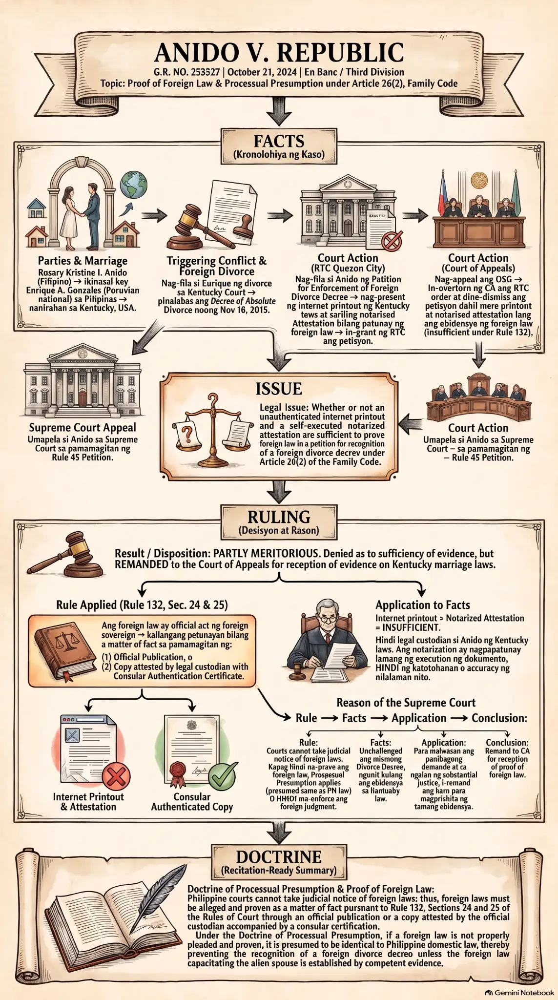
Use click/tap to enlarge, or right-click/long-press the poster to save it.
Asilo v. Gonzales-Betic — Proof of foreign divorce and foreign law
Poster filename: Asilo v. Gonzales-Betic.png
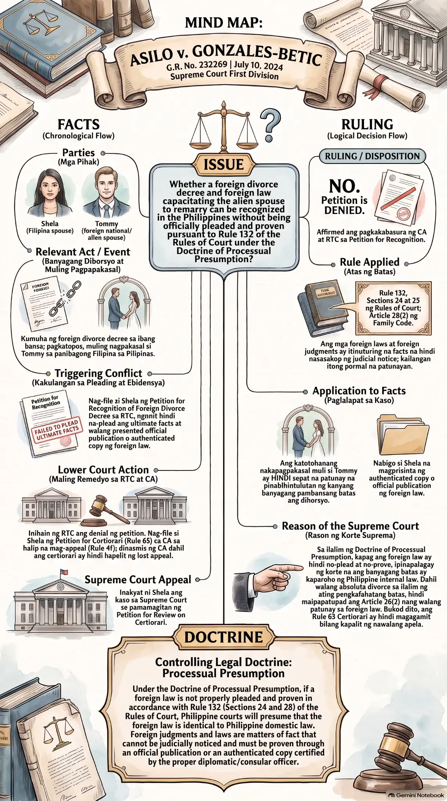
Use click/tap to enlarge, or right-click/long-press the poster to save it.
Arreza v. Toyo — Judicial recognition of foreign divorce
Poster filename: Toyo v. Toyo.png
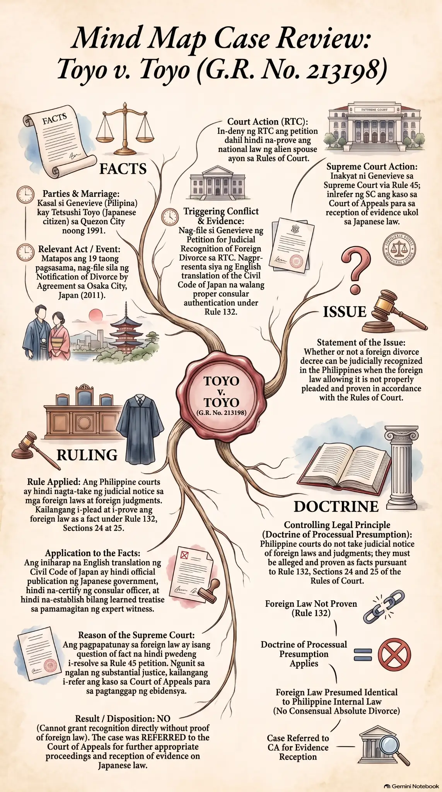
Use click/tap to enlarge, or right-click/long-press the poster to save it.
Syllabus case videos · Recognition of Marriage Abroad / Effect of Divorce Abroad / Proof of Foreign Divorce (9)
These cases are cross-referenced here for applying the codal provision. Open the case title to play its video; use the case index below to find all assigned cases by syllabus subtopic.
Ambrose v. Suque-Ambrose, G.R. No. 206761, June 23, 2021
A marriage license is unnecessary for articulo mortis marriages at the point of death.
MEMORY SKELETON Article-specific recall map
One-clause article. Opening cue: “In case either or both of the …” Closing cue: “… even if the ailing party subsequently survives.”
Use the opening cue to start cleanly and the closing cue to catch omitted qualifiers during verbatim recall.
ILLUSTRATION — HYPOTHETICAL
Facts: A gravely ill patient at the point of death wants to marry a long-time partner, and obtaining a license is impossible in time.
Application: An articulo mortis marriage falls within the statutory license exception.
Result: The marriage may be solemnized without a license if the remaining requisites are met.
Marriage - Requisites and License Exceptions
Family Code - Article 28
Simple explanation
The articulo mortis license exception also applies where a party’s remote location leaves no means of transportation to appear before the registrar.
MEMORY SKELETON Article-specific recall map
One-clause article. Opening cue: “If the residence of either party is …” Closing cue: “… solemnized without necessity of a marriage license.”
Use the opening cue to start cleanly and the closing cue to catch omitted qualifiers during verbatim recall.
ILLUSTRATION — HYPOTHETICAL
Facts: A party lives on a remote island with no means of transportation to appear personally before the registrar.
Application: Article 28 extends the license exception to the specified remote-location situation.
Result: The marriage may proceed under the exception with the required safeguards.
Marriage - Requisites and License Exceptions
Family Code - Article 29
Simple explanation
The solemnizing officer must execute the required affidavit for Articles 27 or 28 marriages and confirm age and absence of impediment.
MEMORY SKELETON Article-specific recall map
One-clause article. Opening cue: “In the cases provided for in the …” Closing cue: “… absence of legal impediment to the marriage.”
Use the opening cue to start cleanly and the closing cue to catch omitted qualifiers during verbatim recall.
ILLUSTRATION — HYPOTHETICAL
Facts: An officer solemnizes an Article 27 deathbed marriage but never investigates capacity or executes the required affidavit.
Application: The exception carries an affidavit duty confirming the circumstances, ages, and absence of impediment.
Result: The officer’s noncompliance may create liability and evidentiary problems.
Marriage - Requisites and License Exceptions
Family Code - Article 30
Simple explanation
The solemnizing officer sends the affidavit and readable marriage contract to the registrar within 30 days.
MEMORY SKELETON Article-specific recall map
One-clause article. Opening cue: “The original of the affidavit required in …” Closing cue: “… days after the performance of the marriage.”
Use the opening cue to start cleanly and the closing cue to catch omitted qualifiers during verbatim recall.
ILLUSTRATION — HYPOTHETICAL
Facts: After an exempt marriage, the officer waits two months before sending the affidavit and readable contract to the registrar.
Application: Article 30 requires transmission within thirty days.
Result: The officer violates the registration duty even though validity must be separately analyzed.
Marriage - Requisites and License Exceptions
Family Code - Article 31
Simple explanation
A ship captain or airplane pilot may solemnize an articulo mortis marriage during a voyage and specified stopovers.
MEMORY SKELETON Article-specific recall map
One-clause article. Opening cue: “A marriage in articulo mortis between passengers …” Closing cue: “… also during stopovers at ports of call.”
Use the opening cue to start cleanly and the closing cue to catch omitted qualifiers during verbatim recall.
ILLUSTRATION — HYPOTHETICAL
Facts: During an international flight, a passenger becomes critically ill and asks to marry a companion while no ordinary solemnizing officer is available.
Application: An airplane pilot may solemnize an articulo mortis marriage during the voyage and the statutory stopovers.
Result: The pilot may act if the remaining legal requisites exist.
Marriage - Requisites and License Exceptions
Family Code - Article 32
Simple explanation
A military commander may solemnize an articulo mortis marriage within the zone of military operation when no chaplain is available.
MEMORY SKELETON Article-specific recall map
One-clause article. Opening cue: “A military commander of a unit, who …” Closing cue: “… members of the armed forces or civilians.”
Use the opening cue to start cleanly and the closing cue to catch omitted qualifiers during verbatim recall.
ILLUSTRATION — HYPOTHETICAL
Facts: In a military operation zone, a soldier is dying, no chaplain is assigned, and the commanding officer is a commissioned officer.
Application: Article 32 authorizes the military commander in the specified emergency.
Result: The commander may solemnize the articulo mortis marriage.
Marriage - Requisites and License Exceptions
Family Code - Article 33
Simple explanation
Muslim and ethnic-cultural marriages performed according to customs do not require a license.
MEMORY SKELETON Article-specific recall map
One-clause article. Opening cue: “Marriages among Muslims or among members of …” Closing cue: “… accordance with their customs, rites or practices.”
Use the opening cue to start cleanly and the closing cue to catch omitted qualifiers during verbatim recall.
ILLUSTRATION — HYPOTHETICAL
Facts: Members of a recognized Muslim community marry according to their customs, rites, or practices.
Application: Article 33 removes the marriage-license requirement for marriages covered by the provision.
Result: Lack of an ordinary license does not by itself invalidate that marriage.
Marriage - Requisites and License Exceptions
Family Code - Article 34
Simple explanation
Five years of continuous cohabitation without legal impediment may exempt the couple from a license, but the required affidavits and factual truth are crucial.
Doctrine / why it matters: The five-year cohabitation must be continuous and exclusive, and the parties must have had no legal impediment to marry during the entire period. A false affidavit cannot cure the absence of a required marriage license.
ILLUSTRATION — ACTUAL CASE
Facts: A couple claimed the five-year cohabitation exception even though a legal impediment existed during part of the period and the affidavit was false.
Application: Republic v. Dayot required continuous cohabitation without legal impediment throughout the entire five years.
Result: The false affidavit could not cure the absence of the required license.
Void and Voidable Marriages
Family Code - Article 35
Simple explanation
This enumerates marriages void from the beginning because of age, authority, license, bigamy, mistake of identity, or a void subsequent marriage.
Doctrine / why it matters: Where there was no marriage ceremony at all and the parties merely signed a marriage contract, the first supposed marriage was void ab initio; on those facts, the accused could not be convicted of bigamy.
ILLUSTRATION — ACTUAL CASE
Facts: The parties merely signed a marriage contract and did not participate in any marriage ceremony.
Application: Morigo v. People held that the complete absence of a ceremony meant there was no valid first marriage on those facts.
Result: The supposed first union was void ab initio, affecting the later bigamy charge.
Void and Voidable Marriages
Family Code - Article 36
Simple explanation
Psychological incapacity means a legal inability to comply with essential marital obligations existing at celebration, even if manifested later; it is not mere difficulty or refusal.
Doctrine / why it matters: Psychological incapacity is a legal—not medical—concept. It must be shown by clear and convincing evidence as a grave, enduring incapacity rooted in the spouse’s personality structure, making performance of essential marital obligations impossible; expert testimony is not indispensable.
ILLUSTRATION — HYPOTHETICAL
Facts: At the time of marriage, a spouse has a grave and enduring personality structure that makes fidelity, mutual respect, and support genuinely impossible—not merely difficult—and the pattern later becomes evident.
Application: Tan-Andal treats psychological incapacity as a legal concept proved by clear and convincing evidence; a medical diagnosis is not indispensable.
Result: The marriage may be declared void if the legally required incapacity is established.
Void and Voidable Marriages
Family Code - Article 37
Simple explanation
Incestuous marriages within the enumerated degrees are void regardless of legitimacy.
MEMORY SKELETON Article-specific recall map
3 checkable parts. Recite them in this order:
1. “Marriages between the following are incestuous and …”
2. “(1) Between ascendants and descendants of any degree; and”
3. “(2) Between brothers and sisters, whether of …”
Structure is part of verbatim mastery: do not merge, reorder, or skip a paragraph or numbered item.
ILLUSTRATION — HYPOTHETICAL
Facts: A man and his biological sister attempt to marry after learning they were raised in different families.
Application: Marriage between siblings is incestuous regardless of legitimacy or upbringing.
Result: The marriage is void from the beginning.
Void and Voidable Marriages
Family Code - Article 38
Simple explanation
These marriages are void for reasons of public policy, including specified affinity, adoption, and killing-to-marry situations.
MEMORY SKELETON Article-specific recall map
10 checkable parts. Recite them in this order:
1. “The following marriages shall be void from …”
2. “(1) Between collateral blood relatives whether legitimate …”
3. “(2) Between step-parents and step-children;”
4. “(3) Between parents-in-law and children-in-law;”
5. “(4) Between the adopting parent and the adopted child;”
6. “(5) Between the surviving spouse of the …”
7. “(6) Between the surviving spouse of the …”
8. “(7) Between an adopted child and a …”
9. “(8) Between adopted children of the same adopter; and”
10. “(9) Between parties where one, with the …”
Structure is part of verbatim mastery: do not merge, reorder, or skip a paragraph or numbered item.
ILLUSTRATION — HYPOTHETICAL
Facts: An adopted child and the adopting parent attempt to marry after the adoption relationship deteriorates.
Application: Article 38 treats the specified adoption relationship as a public-policy impediment.
Result: The marriage is void.
Void and Voidable Marriages
Family Code - Article 39
Simple explanation
An action or defense to declare a marriage absolutely void does not prescribe.
Doctrine / why it matters: Actions or defenses for declaration of absolute nullity do not prescribe. The amendment removed the former ten-year prescriptive period for marriages celebrated on or after the Family Code’s effectivity.
ILLUSTRATION — HYPOTHETICAL
Facts: A party discovers decades later that a supposed marriage was void from the beginning and raises nullity as a defense.
Application: The action or defense for declaration of absolute nullity does not prescribe.
Result: Passage of time alone does not validate the void marriage.
Void and Voidable Marriages
Family Code - Article 40
Simple explanation
For remarriage, a void prior marriage must first be declared void by a final judgment; a party cannot rely on a private belief of nullity.
Doctrine / why it matters: For purposes of remarriage, a prior marriage must first be judicially declared void. A person who contracts another marriage while the first subsists cannot privately decide that the first was void and use that belief as a defense to bigamy.
ILLUSTRATION — ACTUAL CASE
Facts: A spouse contracted another marriage while the first marriage had not yet been judicially declared void.
Application: Tenebro v. Court of Appeals rejected reliance on a private belief that the first marriage was void for purposes of remarriage.
Result: A final judicial declaration must precede remarriage.
Void and Voidable Marriages
Family Code - Article 41
Simple explanation
A subsequent marriage during a prior marriage may be valid only after the statutory absence, well-founded belief of death, and judicial declaration of presumptive death.
Doctrine / why it matters: A well-founded belief of death requires diligent and reasonable efforts to locate the absent spouse. Mere absence, unverified reports, or a superficial search is not enough; a judicial declaration of presumptive death must precede remarriage.
ILLUSTRATION — ACTUAL CASE
Facts: A spouse relied on absence and limited inquiries but did not make a diligent search before seeking to remarry.
Application: Republic v. Nolasco required facts supporting a well-founded belief of death, not mere absence or superficial efforts.
Result: Without diligent search and a prior judicial declaration, the Article 41 exception is not established.
New case review posters (1)
Key point: Article 41 requires a judicial declaration of presumptive death before a spouse may contract a subsequent marriage on that ground.
Manuel v. People — Presumptive death before remarriage
Poster filename: Manuel v People.png
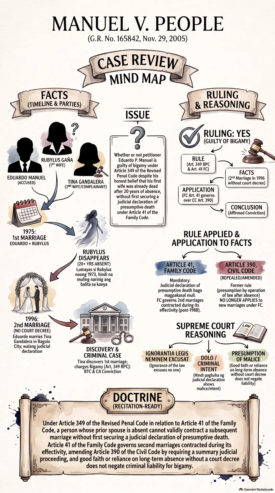
Use click/tap to enlarge, or right-click/long-press the poster to save it.
Void and Voidable Marriages
Family Code - Article 42
Simple explanation
Recording an affidavit of reappearance generally terminates the subsequent marriage, unless the prior marriage was already judicially annulled or declared void.
PROCEDURAL KEY Reappearance does not always terminate the later marriage automatically
Reappearance does not always terminate the later marriage automatically
Doctrine / why it matters: Termination under Article 42 requires recording an affidavit of reappearance, unless there is already a judgment annulling or declaring the subsequent marriage void.
ILLUSTRATION — HYPOTHETICAL
Facts: An absent spouse reappears after the present spouse has entered an Article 41 subsequent marriage, and an affidavit of reappearance is properly recorded.
Application: Recorded reappearance generally terminates the subsequent marriage unless the statutory exception applies.
Result: The later marriage ends by operation of the article, subject to its recording requirements.
Void and Voidable Marriages
Family Code - Article 43
Simple explanation
This lists the consequences when the Article 41 subsequent marriage terminates: legitimacy, property liquidation, donations, insurance, and succession.
MEMORY SKELETON Article-specific recall map
6 checkable parts. Recite them in this order:
1. “The termination of the subsequent marriage referred …”
2. “(1) The children of the subsequent marriage …”
3. “(2) The absolute community of property or …”
4. “(3) Donations by reason of marriage shall …”
5. “(4) The innocent spouse may revoke the …”
6. “(5) The spouse who contracted the subsequent …”
Structure is part of verbatim mastery: do not merge, reorder, or skip a paragraph or numbered item.
ILLUSTRATION — HYPOTHETICAL
Facts: An Article 41 marriage terminates after the absent spouse’s recorded reappearance.
Application: Article 43 preserves the children’s legitimacy and governs liquidation, donations, insurance designations, and succession consequences according to good or bad faith.
Result: The court applies each listed consequence rather than treating the later marriage as though it never existed.
Void and Voidable Marriages
Family Code - Article 44
Simple explanation
If both parties to the subsequent marriage acted in bad faith, the marriage is void and marriage donations and testamentary favors are revoked by law.
MEMORY SKELETON Article-specific recall map
One-clause article. Opening cue: “If both spouses of the subsequent marriage …” Closing cue: “… other are revoked by operation of law.”
Use the opening cue to start cleanly and the closing cue to catch omitted qualifiers during verbatim recall.
ILLUSTRATION — HYPOTHETICAL
Facts: Both parties marry while knowing that one party’s prior spouse is alive and that the prior marriage still subsists.
Application: Both acted in bad faith.
Result: The subsequent marriage is void, and donations by reason of marriage and testamentary dispositions between them are revoked by operation of law.
Void and Voidable Marriages
Family Code - Article 45
Simple explanation
These are the exclusive grounds for annulment of a voidable marriage, all existing at the time of marriage.
EXAM DISTINCTION Voidable means valid until annulled
Voidable means valid until annulled
Doctrine / why it matters: Unlike a void marriage, a voidable marriage produces legal effects until a court annuls it. Certain grounds may also be barred by free cohabitation after the defect ceases or is discovered.
ILLUSTRATION — HYPOTHETICAL
Facts: A person marries under serious intimidation but freely continues marital cohabitation after the threat completely disappears.
Application: Force or intimidation is an annulment ground, but free cohabitation after it ceases may ratify the voidable marriage.
Result: Annulment on that ground may no longer be available.
Void and Voidable Marriages
Family Code - Article 46
Simple explanation
Only the specific nondisclosures listed here constitute fraud under Article 45(3); ordinary misrepresentation about character, health, rank, wealth, or chastity is insufficient.
EXCLUSIVE LIST Only statutory fraud counts
Only statutory fraud counts
Doctrine / why it matters: Fraud under Article 45(3) is limited to the circumstances specifically listed in Article 46. Misrepresentation about character, health, rank, fortune, or chastity is not enough unless it falls within the statute.
ILLUSTRATION — HYPOTHETICAL
Facts: A spouse concealed an existing serious sexually transmissible disease, while another spouse merely exaggerated wealth and social rank.
Application: The first concealment falls within the exclusive statutory fraud list; ordinary deceit about fortune or rank does not.
Result: Only the statutory fraud can support annulment under Article 45(3).
Void and Voidable Marriages
Family Code - Article 47
Simple explanation
This identifies who may file annulment and the prescriptive period for each ground. Match the ground to the correct claimant and starting point.
LIMITATION MAP Match the plaintiff to the period
Match the plaintiff to the period
Doctrine / why it matters: Do not memorize one universal deadline. Article 47 changes the proper plaintiff and reckoning point according to age, unsoundness of mind, fraud, force/intimidation/undue influence, or impotence/serious incurable STI.
ILLUSTRATION — HYPOTHETICAL
Facts: A spouse discovers qualifying fraud but waits more than five years after discovery before suing.
Application: For fraud, Article 47 gives the injured party five years from discovery.
Result: The annulment action is time-barred on that ground.
Void and Voidable Marriages
Family Code - Article 48
Simple explanation
In annulment and nullity cases, the prosecutor or fiscal guards against collusion and fabricated evidence; judgment cannot rest on stipulation or confession.
ANTI-COLLUSION RULE No judgment on stipulation or confession
No judgment on stipulation or confession
Doctrine / why it matters: In annulment or nullity cases, the prosecutor must guard against collusion and fabricated or suppressed evidence. Marriage status cannot be changed merely because both spouses agree.
ILLUSTRATION — HYPOTHETICAL
Facts: Both spouses submit an agreed statement saying they want the marriage declared void, but present no independent proof of a legal ground.
Application: Marriage status cannot be changed by agreement or confession; the prosecutor must guard against collusion.
Result: The court cannot grant nullity on the stipulation alone.
Void and Voidable Marriages
Family Code - Article 49
Simple explanation
During the case, the court provides for spousal support and the custody and support of the common children, with their welfare and proper visitation as controlling concerns.
MEMORY SKELETON Article-specific recall map
One-clause article. Opening cue: “During the pendency of the action and …” Closing cue: “… appropriate visitation rights of the other parent.”
Use the opening cue to start cleanly and the closing cue to catch omitted qualifiers during verbatim recall.
ILLUSTRATION — HYPOTHETICAL
Facts: While a nullity case is pending, the spouses disagree about temporary support, where the children will live, and visitation.
Application: In the absence of an adequate written agreement, the court provides interim support, custody, and visitation with the children’s welfare paramount.
Result: Temporary orders may be issued without awaiting final judgment.
Void and Voidable Marriages
Family Code - Article 50
Simple explanation
The final judgment applies the proper Article 43 and 44 effects and addresses property liquidation, custody and support, presumptive legitimes, creditors, and the conjugal dwelling.
MEMORY SKELETON Article-specific recall map
4 checkable parts. Recite them in this order:
1. “The effects provided for by paragraphs (2), …”
2. “The final judgment in such cases shall …”
3. “All creditors of the spouses as well …”
4. “In the partition, the conjugal dwelling and …”
Structure is part of verbatim mastery: do not merge, reorder, or skip a paragraph or numbered item.
ILLUSTRATION — HYPOTHETICAL
Facts: A marriage is annulled by final judgment, but the spouses have community property, common children, and creditors.
Application: The judgment must address liquidation and partition, custody and support, presumptive legitimes, notice to creditors, and the conjugal dwelling under the referenced rules.
Result: The court cannot end with a bare declaration of annulment.
Void and Voidable Marriages
Family Code - Article 51
Simple explanation
The child’s presumptive legitime must be delivered or secured in the partition and recorded as required; failure affects the judgment and transactions.
MEMORY SKELETON Article-specific recall map
3 checkable parts. Recite them in this order:
1. “In said partition, the value of the …”
2. “The children or their guardian or the …”
3. “The delivery of the presumptive legitimes herein …”
Structure is part of verbatim mastery: do not merge, reorder, or skip a paragraph or numbered item.
ILLUSTRATION — HYPOTHETICAL
Facts: In the partition after annulment, the spouses ignore the common children’s presumptive legitimes.
Application: Their value must be computed as of the trial court’s final judgment and delivered in cash, property, or sound securities unless a judicially approved arrangement exists.
Result: The children or proper representative may enforce delivery; what they receive is treated as an advance on the eventual legitime.
Void and Voidable Marriages
Family Code - Article 52
Simple explanation
The judgment, property partition, and delivery of presumptive legitimes must be recorded in the specified civil registries and registries of property.
THIRD-PERSON RULE Record the judgment and property consequences
Record the judgment and property consequences
Doctrine / why it matters: The judgment, partition and distribution, and delivery of presumptive legitimes must be recorded in the proper civil registry and registries of property; otherwise they do not affect third persons.
ILLUSTRATION — HYPOTHETICAL
Facts: Former spouses obtain a nullity judgment but do not record it or the property partition; one later deals with an innocent third-party buyer.
Application: Unrecorded matters do not affect third persons under Article 52.
Result: The former spouses cannot enforce the unrecorded consequence against the protected third party.
Void and Voidable Marriages
Family Code - Article 53
Simple explanation
Failure to comply with Article 52 makes a subsequent marriage of either former spouse void.
Doctrine / why it matters: A former spouse may remarry only after compliance with Article 52. Noncompliance makes the subsequent marriage void under the express text of Article 53.
ILLUSTRATION — HYPOTHETICAL
Facts: A former spouse remarries after a nullity judgment but before completing the Article 52 recording requirements.
Application: Article 53 makes compliance a condition before either former spouse may marry again.
Result: The subsequent marriage is void.
Void and Voidable Marriages
Family Code - Article 54
Simple explanation
Children conceived or born before final judgment under Article 36, and children of the Article 53 subsequent marriage, remain legitimate.
STATUS PROTECTION Two groups remain legitimate
Two groups remain legitimate
Doctrine / why it matters: Protect the status of children conceived or born before finality of an Article 36 judgment, and children conceived or born of the subsequent marriage contemplated by Article 53.
ILLUSTRATION — HYPOTHETICAL
Facts: A child is conceived before an Article 36 judgment becomes final, and another child is born of the subsequent marriage contemplated by Article 53.
Application: Article 54 expressly protects both groups.
Result: The children are considered legitimate despite the marital defects described.
Legal Separation
Family Code - Article 55
Simple explanation
This enumerates the ten statutory grounds for legal separation.
ENUMERATION MAP Ten exclusive grounds
Ten exclusive grounds
Doctrine / why it matters: Group them for recall: violence/pressure; corruption into prostitution; imprisonment; addiction/alcoholism; sexual-orientation ground in the codal text; bigamous remarriage; sexual infidelity/perversion; attempt on life; and unjustified abandonment.
ILLUSTRATION — HYPOTHETICAL
Facts: A spouse repeatedly inflicts physical violence on the petitioner and later abandons the family without justification for more than one year.
Application: The conduct falls within enumerated statutory grounds for legal separation.
Result: The injured spouse may file a petition, subject to Articles 56 and 57.
Legal Separation
Family Code - Article 56
Simple explanation
Even with a ground, legal separation is denied when any listed defense exists, such as condonation, consent, mutual guilt, collusion, or prescription.
DEFENSES MAP Why legal separation must be denied
Why legal separation must be denied
Doctrine / why it matters: Use C-C-C-M-C-P: condonation, consent, connivance, mutual guilt, collusion, and prescription.
ILLUSTRATION — HYPOTHETICAL
Facts: After discovering adultery, the injured spouse knowingly forgives it and resumes marital life, then later petitions based solely on that same offense.
Application: Condonation is an express ground for denial of legal separation.
Result: The petition based on the condoned act must be denied.
Legal Separation
Family Code - Article 57
Simple explanation
The action for legal separation must be filed within five years from occurrence of the cause.
DEADLINE Five years from occurrence
Five years from occurrence
Doctrine / why it matters: The prescriptive period runs from the occurrence of the cause—not from discovery, separation, or the last reconciliation attempt.
ILLUSTRATION — HYPOTHETICAL
Facts: The ground for legal separation occurred six years ago, and no later qualifying cause is alleged.
Application: The action must be filed within five years from occurrence of the cause.
Result: The petition is barred by prescription.
Legal Separation
Family Code - Article 58
Simple explanation
No trial may occur before six months from filing, creating a cooling-off period without barring protective relief.
COOLING-OFF RULE Six months before trial—not six months before protection
Six months before trial—not six months before protection
Doctrine / why it matters: The waiting period postpones trial on the merits. It does not justify withholding urgent provisional relief concerning support, custody, or protection from violence.
ILLUSTRATION — HYPOTHETICAL
Facts: A legal-separation petition is filed today, and the court schedules trial on the merits two months later while the petitioner urgently needs protection and support.
Application: Trial cannot begin before six months, but the cooling-off period does not require withholding urgent provisional relief.
Result: The merits trial must wait; proper protective and support measures may proceed.
Legal Separation
Family Code - Article 59
Simple explanation
The court must attempt reconciliation and be fully satisfied that reconciliation is highly improbable before decreeing legal separation.
RECONCILIATION RULE The court must try and assess
The court must try and assess
Doctrine / why it matters: The court must take steps toward reconciliation and be fully satisfied that reconciliation is highly improbable before decreeing legal separation.
ILLUSTRATION — HYPOTHETICAL
Facts: The parties remain open to reconciliation, but the court immediately prepares to decree legal separation without attempting it.
Application: The court must take reconciliation steps and be fully satisfied that reconciliation is highly improbable.
Result: A decree issued without that statutory determination is improper.
Legal Separation
Family Code - Article 60
Simple explanation
A decree cannot rest on stipulated facts or a confession of judgment; the prosecutor or fiscal must guard against collusion and fabricated or suppressed evidence.
ANTI-COLLUSION RULE No stipulation or confession of judgment
No stipulation or confession of judgment
Doctrine / why it matters: The prosecutor or fiscal must prevent collusion and ensure that evidence is neither fabricated nor suppressed. Compare Article 59, which focuses on reconciliation efforts.
ILLUSTRATION — HYPOTHETICAL
Facts: The spouses jointly confess a ground for legal separation and ask the court to dispense with evidence.
Application: A decree cannot rest on stipulated facts or confession; the prosecutor must prevent collusion and fabricated or suppressed evidence.
Result: Independent proof and the statutory process remain necessary.
Legal Separation
Family Code - Article 61
Simple explanation
After filing, the spouses may live separately; absent a written agreement, the court designates who will administer the common property.
MEMORY SKELETON Article-specific recall map
2 checkable parts. Recite them in this order:
1. “After the filing of the petition for …”
2. “The court, in the absence of a …”
Structure is part of verbatim mastery: do not merge, reorder, or skip a paragraph or numbered item.
ILLUSTRATION — HYPOTHETICAL
Facts: After filing for legal separation, the spouses have no written agreement on who will manage their community property.
Application: They may live separately, and the court designates either spouse or a third person as administrator.
Result: The appointed administrator exercises the powers and duties of a guardian under the Rules of Court.
Legal Separation
Family Code - Article 62
Simple explanation
During the case, Article 49 likewise governs spousal support and the custody and support of the common children.
MEMORY SKELETON Article-specific recall map
One-clause article. Opening cue: “During the pendency of the action for …” Closing cue: “… custody and support of the common children.”
Use the opening cue to start cleanly and the closing cue to catch omitted qualifiers during verbatim recall.
ILLUSTRATION — HYPOTHETICAL
Facts: During a legal-separation case, one spouse stops supporting the common children and blocks all contact with the other parent.
Application: Article 49 applies to interim spousal support and the custody and support of the children.
Result: The court may issue appropriate temporary support, custody, and visitation orders.
Legal Separation
Family Code - Article 63
Simple explanation
A decree permits separate living but does not end the marriage bond; it liquidates property, affects custody, succession, and testamentary benefits.
CORE DISTINCTION Legal separation does not sever the marriage bond
Legal separation does not sever the marriage bond
Doctrine / why it matters: The spouses may live separately and their property and succession rights change, but neither becomes free to remarry merely because a decree of legal separation was issued.
ILLUSTRATION — HYPOTHETICAL
Facts: After a decree of legal separation, one spouse assumes both are single and plans another marriage.
Application: Legal separation permits separate living and changes property, custody, and succession consequences, but does not sever the marriage bond.
Result: Neither spouse is free to remarry on that decree alone.
Legal Separation
Family Code - Article 64
Simple explanation
After finality, the innocent spouse may revoke donations and insurance designation within the article’s rules, periods, and protections for good-faith third parties.
DEADLINE + EFFECT Five years to revoke donations
Five years to revoke donations
Doctrine / why it matters: The innocent spouse has five years from finality of the decree to sue for revocation of donations. Changing an insurance beneficiary takes effect upon written notification to the insured, while protected good-faith property interests remain respected.
ILLUSTRATION — HYPOTHETICAL
Facts: Two years after a final legal-separation decree, the innocent spouse seeks to revoke a donation to the offending spouse and change an insurance beneficiary.
Application: The donation action is within the five-year period, while the insurance change requires written notification to the insured and remains subject to protected third-party rights.
Result: The remedies may be pursued by following the article’s separate formal requirements.
Syllabus Case Bank
Family Relations Case Index · I. Requisites of Marriage
All assigned cases are gathered here in the same subtopic order as the syllabus. Select a case title to open its YouTube video, or jump to the related codal article for the in-context player. “Related provisions” are cross-references for study; some doctrines, especially presumptions, are evidentiary rules rather than text stated in one single article.